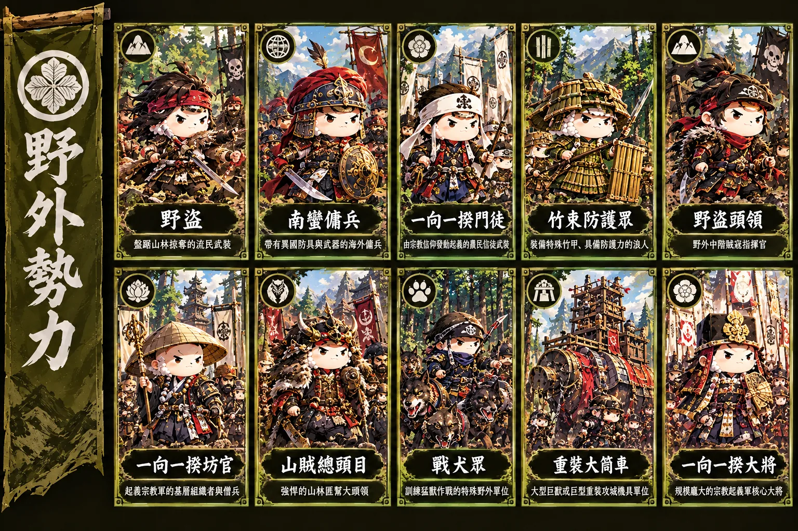

<meta charset="utf-8">
<title>車肥羊戰國 官網</title>
<link rel="icon" type="image/png" href="/assets/favicon.png">
<link rel="apple-touch-icon" href="/assets/apple-touch-icon.png">
<meta name="theme-color" content="#3f0a10">
<meta name="viewport" content="width=device-width, initial-scale=1, viewport-fit=cover">
<meta name="claude:viewport-fit-sides" content="cover">
<meta name="description" content="車肥羊戰國官方網站：遊戲介紹、新手教學、遊戲說明、玩家討論版、常見問題與加到桌面教學。">
<link rel="preconnect" href="https://fonts.googleapis.com">
<link rel="preconnect" href="https://fonts.gstatic.com" crossorigin>
<link rel="stylesheet" href="https://fonts.googleapis.com/css2?family=LXGW+WenKai+TC:wght@400;700&family=Noto+Sans+TC:wght@400;500;700&display=swap">
<style>
/* Layout: the game's own crimson-and-kamon ground; logo banner with the three lords, then a sticky tab bar switching 討論版/介紹/教學/說明/FAQ. Single dark look on purpose, matching the game. */
:root{
 --bg:#3f0a10; --surface:#1a0f11; --sunk:#2a1417; --ink:#f1e6d3; --muted:#c2b09a; --line:#5a3d27;
 --accent:#b0162f; --accent-ink:#fff4e2; --gold:#d4b370; --ok:#9bd596; --warn:#e8a65a;
 --lacquer:#21060b; --lacquer-2:#70091d; --on-lacquer:#f1e6d3; --on-lacquer-mut:#c2b09a; --leaf:#d4b370;
 --wei:#c21d35; --shu:#2a5bb5; --wu:#d19a1f;
 --f-display:"LXGW WenKai TC","Kaiti TC","STKaiti","BiauKai",serif;
 --f-body:"Noto Sans TC","Microsoft JhengHei","PingFang TC",system-ui,sans-serif;
 --r:6px; color-scheme:dark;
}
*{box-sizing:border-box}
img{height:auto}
body{background:url("data:image/svg+xml,%3Csvg xmlns='http://www.w3.org/2000/svg' width='240' height='240' viewBox='0 0 240 240'%3E%3Cg fill='%23d9b36a' fill-opacity='.07' stroke='%23d9b36a' stroke-opacity='.18' stroke-width='3'%3E%3Ccircle cx='120' cy='120' r='112' fill='none'/%3E%3Cg id='p'%3E%3Cellipse cx='120' cy='62' rx='34' ry='48'/%3E%3C/g%3E%3Cuse href='%23p' transform='rotate(72 120 120)'/%3E%3Cuse href='%23p' transform='rotate(144 120 120)'/%3E%3Cuse href='%23p' transform='rotate(216 120 120)'/%3E%3Cuse href='%23p' transform='rotate(288 120 120)'/%3E%3Ccircle cx='120' cy='120' r='22'/%3E%3C/g%3E%3C/svg%3E") 94% 120px/260px no-repeat,url("data:image/svg+xml,%3Csvg xmlns='http://www.w3.org/2000/svg' width='240' height='240' viewBox='0 0 240 240'%3E%3Cg fill='%23d9b36a' fill-opacity='.07' stroke='%23d9b36a' stroke-opacity='.18' stroke-width='3'%3E%3Ccircle cx='120' cy='120' r='112' fill='none'/%3E%3Cg id='p'%3E%3Cellipse cx='120' cy='62' rx='34' ry='48'/%3E%3C/g%3E%3Cuse href='%23p' transform='rotate(72 120 120)'/%3E%3Cuse href='%23p' transform='rotate(144 120 120)'/%3E%3Cuse href='%23p' transform='rotate(216 120 120)'/%3E%3Cuse href='%23p' transform='rotate(288 120 120)'/%3E%3Ccircle cx='120' cy='120' r='22'/%3E%3C/g%3E%3C/svg%3E") 3% 62%/210px no-repeat,url("data:image/svg+xml,%3Csvg xmlns='http://www.w3.org/2000/svg' width='44' height='22' viewBox='0 0 44 22'%3E%3Cg fill='none' stroke='%23d9b36a' stroke-opacity='.16' stroke-width='1'%3E%3Ccircle cx='0' cy='22' r='22'/%3E%3Ccircle cx='0' cy='22' r='16'/%3E%3Ccircle cx='0' cy='22' r='10'/%3E%3Ccircle cx='44' cy='22' r='22'/%3E%3Ccircle cx='44' cy='22' r='16'/%3E%3Ccircle cx='44' cy='22' r='10'/%3E%3Ccircle cx='22' cy='11' r='22'/%3E%3Ccircle cx='22' cy='11' r='16'/%3E%3Ccircle cx='22' cy='11' r='10'/%3E%3C/g%3E%3C/svg%3E"),linear-gradient(#4a0c14,#360810 70%,#2d070d);background-attachment:fixed;color:var(--ink);font-family:var(--f-body);font-size:16px;line-height:1.75;-webkit-font-smoothing:antialiased}
body::before{content:"";position:fixed;inset:0 0 auto;height:env(safe-area-inset-top,0px);z-index:10;background:var(--lacquer)}
a{color:var(--accent)}
h1,h2,h3{font-family:var(--f-display);font-weight:700;text-wrap:balance;line-height:1.3;margin:0}
h2{font-size:clamp(1.6rem,1.2rem + 1.6vw,2.2rem);color:#f6e7c8}
h3{font-size:1.3rem}
p{margin:0}
.wrap{max-width:1080px;margin:0 auto;padding-left:max(16px,env(safe-area-inset-left,0px));padding-right:max(16px,env(safe-area-inset-right,0px))}
.prose{max-width:68ch}
.mut{color:var(--muted)}
.num{font-variant-numeric:tabular-nums}
:focus-visible{outline:2px solid var(--gold);outline-offset:2px}

/* top bar */
.bar{position:sticky;top:env(safe-area-inset-top,0px);z-index:9;background:rgba(33,6,11,.96);backdrop-filter:blur(6px);color:var(--on-lacquer);border-bottom:2px solid var(--leaf)}
.bar .wrap{display:flex;align-items:center;gap:16px;flex-wrap:wrap;padding-block:8px}
.brand{font-family:var(--f-display);font-size:1.35rem;font-weight:700;letter-spacing:.08em;color:var(--on-lacquer);text-decoration:none;display:flex;align-items:center;gap:10px}
.brand img{height:42px;width:auto;display:block}
.tabs{display:flex;gap:2px;margin-left:auto;overflow-x:auto;scrollbar-width:none;max-width:100%}
.tabs::-webkit-scrollbar{display:none}
.tabs a{flex:none;color:var(--on-lacquer-mut);text-decoration:none;padding:8px 14px;border-radius:var(--r);font-weight:500;font-size:.95rem;white-space:nowrap}
.tabs a:hover{color:var(--on-lacquer);background:rgba(255,255,255,.06)}
.tabs a[aria-current="page"]{color:#2a0a0f;background:linear-gradient(#e2c27d,#b8913f)}
@media (max-width:620px){.bar .wrap{gap:4px}.tabs{margin-left:0;width:100%}.tabs a{padding:6px 11px}}

section.page{padding-block:40px 72px}
section.page[hidden]{display:none}
.sec{display:grid;gap:18px;margin-top:56px}
.sec:first-child{margin-top:0}
.eyebrow{font-size:.78rem;letter-spacing:.18em;color:var(--gold);font-weight:700}
.lead{font-size:1.08rem;color:var(--muted);max-width:62ch}

/* hero */
.hero{background:linear-gradient(180deg,rgba(33,6,11,.55),rgba(33,6,11,0));border-bottom:1px solid rgba(212,179,112,.25)}
.hero .wrap{display:grid;grid-template-columns:minmax(0,1fr) minmax(0,1.05fr);gap:36px;align-items:center;padding-block:40px 48px}
.hero h1{margin:0}
.hero .logo{width:100%;max-width:520px;height:auto;display:block;filter:drop-shadow(0 6px 18px rgba(0,0,0,.5))}
.hero p.tag{font-size:1.1rem;color:var(--on-lacquer-mut);margin-top:14px;max-width:34ch}
.cta{display:flex;gap:10px;flex-wrap:wrap;margin-top:24px}
.btn{display:inline-flex;align-items:center;gap:8px;padding:10px 18px;border-radius:var(--r);font-weight:700;text-decoration:none;border:1.5px solid var(--leaf);font-size:1rem}
.btn.pri{background:linear-gradient(#e2c27d,#b8913f);color:#2a0a0f}
.btn.sec2{color:var(--on-lacquer);background:rgba(0,0,0,.25)}
.btn:hover{filter:brightness(1.1)}
.facts{display:flex;flex-wrap:wrap;gap:10px 28px;margin-top:26px;font-size:.9rem;color:var(--on-lacquer-mut)}
.facts b{display:block;font-family:var(--f-display);font-size:1.7rem;color:var(--leaf);font-weight:700;line-height:1.2}
.trio{display:grid;grid-template-columns:repeat(3,minmax(0,1fr));gap:12px;align-items:end}
.lord{margin:0;position:relative;border-radius:6px;overflow:hidden;border:2px solid var(--c);box-shadow:0 16px 36px rgba(0,0,0,.5);background:var(--c)}
.lord img{width:100%;height:auto;aspect-ratio:400/700;object-fit:cover;object-position:top;display:block}
.lord figcaption{position:absolute;left:0;right:0;bottom:0;padding:18px 8px 8px;text-align:center;font-family:var(--f-display);font-weight:700;font-size:1.05rem;letter-spacing:.1em;color:#fff;background:linear-gradient(transparent,rgba(0,0,0,.75))}
.lord.wei{--c:var(--wei)}.lord.shu{--c:var(--shu);transform:translateY(-18px)}.lord.wu{--c:var(--wu)}
@media (prefers-reduced-motion:no-preference){.lord{transition:transform .25s}.lord:hover{transform:translateY(-6px)}.lord.shu:hover{transform:translateY(-24px)}}
@media (max-width:760px){.hero .wrap{grid-template-columns:1fr;padding-block:28px 36px;gap:24px}.hero .logo{margin-inline:auto}.hero .hl{text-align:center}.hero p.tag{margin-inline:auto}.cta,.facts{justify-content:center}.lord.shu{transform:none}}

/* grids */
.g3{display:grid;grid-template-columns:repeat(3,minmax(0,1fr));gap:18px}
.g4{display:grid;grid-template-columns:repeat(4,minmax(0,1fr));gap:14px}
.g2{display:grid;grid-template-columns:repeat(2,minmax(0,1fr));gap:18px}
@media (max-width:860px){.g3{grid-template-columns:1fr}.g4{grid-template-columns:repeat(2,minmax(0,1fr))}.g2{grid-template-columns:1fr}}

.fac{background:var(--surface);border:1px solid var(--line);border-radius:var(--r);overflow:hidden;display:flex;flex-direction:column}
.fac{border-top:4px solid var(--c)}
.fac img{width:100%;height:auto;aspect-ratio:16/10;object-fit:cover;object-position:50% 36%;display:block}
.fac.wei{--c:var(--wei)}.fac.shu{--c:var(--shu)}.fac.wu{--c:var(--wu)}
.fac .in{padding:18px 20px 20px;display:grid;gap:10px}
.fac h3{display:flex;align-items:center;gap:10px}
.fac .kamon{width:34px;height:34px;border-radius:50%;background:var(--c);color:#fff;display:grid;place-items:center;font-size:1rem}
.fac dl{display:grid;grid-template-columns:auto 1fr;gap:4px 14px;margin:0;font-size:.92rem}
.fac dt{color:var(--muted)}
.fac dd{margin:0}
.fac ul{margin:0;padding-left:1.1em;font-size:.95rem}

.res{display:grid;gap:8px}
.res img{width:100%;aspect-ratio:4/3;object-fit:cover;border-radius:4px;display:block}
.res b{font-family:var(--f-display);font-size:1.1rem}
.res span{font-size:.88rem;color:var(--muted);line-height:1.5}

.pillar{border-top:2px solid var(--accent);padding-top:14px;display:grid;gap:6px}
.pillar h3{font-size:1.15rem}
.pillar p{font-size:.95rem;color:var(--muted)}

.note{background:var(--sunk);border-radius:var(--r);padding:16px 20px;font-size:.95rem}
.note b{color:var(--ink)}

/* tutorial */
.phase{display:grid;grid-template-columns:200px minmax(0,1fr);gap:28px;margin-top:44px}
.phase:first-of-type{margin-top:8px}
.phase aside{position:sticky;top:80px;align-self:start;display:grid;gap:6px}
.phase aside .k{font-family:var(--f-display);font-size:1.5rem;font-weight:700}
.phase aside p{font-size:.9rem;color:var(--muted)}
@media (max-width:760px){.phase{grid-template-columns:1fr;gap:12px}.phase aside{position:static}}
ol.steps{list-style:none;margin:0;padding:0;display:grid;gap:0;counter-reset:s var(--start,0)}
ol.steps li{counter-increment:s;display:grid;grid-template-columns:44px minmax(0,1fr);gap:16px;padding:16px 0;border-bottom:1px solid var(--line)}
ol.steps li:last-child{border-bottom:0}
ol.steps li::before{content:counter(s);width:40px;height:40px;border-radius:50%;border:1.5px solid var(--accent);color:var(--accent);display:grid;place-items:center;font-family:var(--f-display);font-weight:700;font-size:1.1rem}
ol.steps h3{font-size:1.12rem;font-family:var(--f-body);font-weight:700}
ol.steps p{color:var(--muted);font-size:.96rem;margin-top:4px}
.chip{display:inline-block;font-size:.75rem;font-weight:700;letter-spacing:.06em;padding:1px 8px;border-radius:99px;background:var(--sunk);color:var(--ink);vertical-align:2px;margin-left:6px}
.chip.gold{background:transparent;border:1px solid var(--gold);color:var(--gold)}
.tip{margin-top:8px;font-size:.92rem;border-left:3px solid var(--gold);padding:2px 0 2px 12px;color:var(--ink)}

/* tables */
.tw{overflow-x:auto;border:1px solid var(--line);border-radius:var(--r);background:rgba(26,15,17,.92)}
table{border-collapse:collapse;width:100%;font-size:.9rem}
th,td{padding:8px 12px;text-align:left;border-bottom:1px solid var(--line);vertical-align:top}
th{background:var(--sunk);font-weight:700;white-space:nowrap;font-size:.82rem;letter-spacing:.04em}
tr:last-child td{border-bottom:0}
td.n,th.n{text-align:right;font-variant-numeric:tabular-nums;white-space:nowrap}
td.nm{font-weight:700;white-space:nowrap}
.uic{display:flex;gap:10px;align-items:center}
.uic img{width:40px;height:40px;border-radius:6px;border:1px solid var(--line);flex:none;object-fit:cover}
.uic small{white-space:normal}
td small{display:block;color:var(--muted);font-size:.8rem;font-weight:400;line-height:1.4}
.seg{display:inline-flex;border:1px solid var(--line);border-radius:var(--r);overflow:hidden;background:var(--surface)}
.seg button{all:unset;cursor:pointer;padding:7px 16px;font-weight:700;font-size:.92rem;color:var(--muted)}
.seg button[aria-pressed="true"]{background:var(--accent);color:var(--accent-ink)}
.seg button:focus-visible{outline:2px solid var(--gold);outline-offset:-2px}

/* manual */
.mangrid{display:grid;grid-template-columns:210px minmax(0,1fr);gap:40px}
.toc{position:sticky;top:80px;align-self:start;display:grid;gap:2px;font-size:.92rem}
.toc a{color:var(--muted);text-decoration:none;padding:5px 10px;border-left:2px solid var(--line)}
.toc a:hover{color:var(--ink);border-left-color:var(--accent)}
@media (max-width:860px){.mangrid{grid-template-columns:1fr}.toc{position:static;display:flex;flex-wrap:wrap;gap:6px}.toc a{border:1px solid var(--line);border-radius:99px;padding:3px 12px}}
.man{display:grid;gap:52px;min-width:0}
.man section{display:grid;gap:16px;scroll-margin-top:84px;min-width:0}
.man h2{font-size:1.6rem;display:flex;align-items:baseline;gap:12px}
.man h2 .kj{font-size:.8rem;color:var(--gold);letter-spacing:.2em;font-family:var(--f-body)}
.man ul{margin:0;padding-left:1.2em;display:grid;gap:6px}
.formula{font-family:ui-monospace,"SF Mono",Menlo,Consolas,monospace;font-size:.88rem;background:var(--sunk);padding:12px 16px;border-radius:var(--r);overflow-x:auto;line-height:1.7;white-space:pre}

/* faq */
.faqtools{display:flex;gap:12px;flex-wrap:wrap;align-items:center}
.faqtools input{flex:1 1 260px;min-width:0;font:inherit;padding:10px 14px;border:1.5px solid var(--line);border-radius:var(--r);background:var(--surface);color:var(--ink)}
.faqtools input:focus{border-color:var(--accent);outline:none}
.cats{display:flex;gap:6px;flex-wrap:wrap}
.cats button{all:unset;cursor:pointer;font-size:.86rem;padding:4px 12px;border-radius:99px;border:1px solid var(--line);color:var(--muted);background:var(--surface)}
.cats button[aria-pressed="true"]{background:var(--ink);color:var(--bg);border-color:var(--ink)}
.cats button:focus-visible{outline:2px solid var(--gold)}
.faqlist{display:grid;gap:28px}
.faqgrp h3{font-size:1.15rem;color:var(--accent);margin-bottom:6px}
details{border-bottom:1px solid var(--line)}
details summary{cursor:pointer;list-style:none;padding:14px 32px 14px 0;font-weight:700;position:relative}
details summary::-webkit-details-marker{display:none}
details summary::after{content:"＋";position:absolute;right:4px;top:13px;color:var(--gold);font-weight:400}
details[open] summary::after{content:"－"}
details .a{padding:0 0 16px;color:var(--ink);max-width:70ch;display:grid;gap:8px}
details .a p{color:var(--muted)}
.empty{color:var(--muted);padding:24px 0}

/* forum */
.fhead{display:flex;flex-wrap:wrap;gap:12px 20px;align-items:flex-end;justify-content:space-between}
.fhead .who{font-size:.9rem;color:var(--muted)}
.fbtn{all:unset;cursor:pointer;display:inline-flex;align-items:center;gap:6px;padding:9px 18px;border-radius:var(--r);background:var(--accent);color:var(--accent-ink);border:1px solid var(--gold);font-weight:700;font-size:.95rem}
.fbtn.ghost{background:transparent;color:var(--ink);border:1px solid var(--line);padding:8px 16px}
.fbtn.sm{padding:4px 10px;font-size:.82rem;font-weight:500}
.fbtn.danger{color:var(--accent);border-color:var(--accent)}
.fbtn[disabled]{opacity:.5;cursor:not-allowed}
.fbtn:focus-visible{outline:2px solid var(--gold);outline-offset:2px}
.fnotice{background:var(--sunk);border-radius:var(--r);padding:12px 16px;font-size:.92rem}
.fnotice.err{border-left:3px solid var(--accent)}
.fnotice.ok{border-left:3px solid var(--ok)}
.flist{border:1px solid var(--line);border-radius:var(--r);background:var(--surface);overflow:hidden}
.frow{display:grid;grid-template-columns:minmax(0,1fr) 64px 64px 150px;gap:16px;align-items:center;padding:12px 16px;border-bottom:1px solid var(--line);cursor:pointer;text-decoration:none;color:inherit}
.frow:last-child{border-bottom:0}
.frow:hover{background:var(--sunk)}
.frow.hd{cursor:default;background:var(--sunk);font-size:.8rem;font-weight:700;color:var(--muted);padding-block:8px}
.frow .ti{font-weight:700;line-height:1.5;overflow-wrap:anywhere}
.frow .meta{font-size:.82rem;color:var(--muted)}
.frow .rc{text-align:center;font-variant-numeric:tabular-nums;font-weight:700}
.frow .lr{font-size:.82rem;color:var(--muted);line-height:1.5}
.cat{display:inline-block;font-size:.72rem;font-weight:700;padding:0 7px;border-radius:3px;border:1px solid var(--gold);color:var(--gold);margin-right:6px;vertical-align:2px;white-space:nowrap}
.cat.news{background:var(--accent);border-color:var(--accent);color:var(--accent-ink)}
.badge{font-size:.72rem;font-weight:700;color:var(--accent);margin-right:4px}
@media (max-width:640px){.frow{grid-template-columns:minmax(0,1fr) 48px 48px;gap:10px}.frow .lr{display:none}.frow.hd span:last-child{display:none}}
.fpager{display:flex;gap:8px;justify-content:center;align-items:center;font-size:.9rem}
.fform{background:var(--surface);border:1px solid var(--line);border-radius:var(--r);padding:18px;display:grid;gap:12px}
.fform label{display:grid;gap:4px;font-size:.88rem;font-weight:700}
.fform input,.fform select,.fform textarea{font:inherit;font-weight:400;padding:9px 12px;border:1.5px solid var(--line);border-radius:var(--r);background:var(--bg);color:var(--ink);width:100%;min-width:0}
.fform textarea{min-height:140px;resize:vertical;line-height:1.7}
.fform input:focus,.fform select:focus,.fform textarea:focus{border-color:var(--accent);outline:none}
.fform .row{display:flex;gap:10px;flex-wrap:wrap;align-items:center}
.fform .cnt{font-size:.78rem;color:var(--muted);font-weight:400;margin-left:auto}
.post{background:var(--surface);border:1px solid var(--line);border-radius:var(--r);display:grid;grid-template-columns:150px minmax(0,1fr)}
.post .au{padding:16px;border-right:1px solid var(--line);background:var(--sunk);display:grid;align-content:start;gap:2px}
.post .au b{overflow-wrap:anywhere}
.post .au small{color:var(--muted);font-size:.78rem}
.post .bd{padding:16px 18px;display:grid;gap:10px;min-width:0}
.post .tx{white-space:pre-wrap;overflow-wrap:anywhere;line-height:1.8}
.post .ft{display:flex;gap:10px;align-items:center;font-size:.8rem;color:var(--muted);flex-wrap:wrap}
.post .ft .sp{margin-left:auto;display:flex;gap:6px}
.post.op{border-color:var(--gold)}
@media (max-width:640px){.post{grid-template-columns:1fr}.post .au{border-right:0;border-bottom:1px solid var(--line);grid-auto-flow:column;justify-content:start;gap:10px;align-items:baseline;padding:10px 16px}}
.posts{display:grid;gap:12px}
.fback{font-size:.92rem;text-decoration:none}
footer{border-top:1px solid rgba(212,179,112,.35);background:rgba(0,0,0,.3);padding-block:24px;color:var(--muted);font-size:.85rem}
@media (prefers-reduced-motion:no-preference){section.page{animation:in .35s ease both}@keyframes in{from{opacity:.4;transform:translateY(6px)}to{opacity:1;transform:none}}}

/* 加到桌面教學 */
#p-install .mshots{display:grid;grid-template-columns:repeat(auto-fit,minmax(215px,1fr));gap:22px 18px;margin-top:6px}
#p-install .mshots.w3{grid-template-columns:repeat(auto-fit,minmax(260px,1fr))}
#p-install .mshot{display:flex;flex-direction:column;gap:10px;align-items:center;min-width:0}
#p-install .msh{display:flex;align-items:center;gap:10px;align-self:stretch}
#p-install .mn{flex:none;width:30px;height:30px;border-radius:50%;background:linear-gradient(#e2c27d,#b8913f);color:#2a0a0f;display:grid;place-items:center;font-weight:700}
#p-install .msh h4{font-family:var(--f-body);font-size:1.02rem;font-weight:700;margin:0}
#p-install .mcap{align-self:stretch;margin:0;color:var(--muted);font-size:.92rem}
#p-install .mph{width:100%;max-width:230px;height:330px;border:6px solid #1d1d1f;border-radius:32px;overflow:hidden;background:#f2f2f7;display:flex;flex-direction:column;color:#1d1d1f;font-family:var(--f-body);font-size:14px;line-height:1.3}
#p-install .mph.dark{background:#3a3a3c;justify-content:flex-end}
#p-install .mph.and{border-radius:24px;background:#f1f3f4}
#p-install .mph.and.dark{background:#1f1f1f;justify-content:center;align-items:center}
#p-install .mph.and.dark:has(.mmenu){justify-content:flex-start;align-items:flex-end;padding:28px 8px 0}
#p-install .mpg{flex:1;background:linear-gradient(#70091d,#2b070c);display:flex;flex-direction:column;align-items:center;justify-content:center;gap:8px;color:#f1e6d3;font-weight:700;font-size:15px;text-align:center;padding:0 8px}
#p-install .mpg img{width:64px;height:64px;border-radius:15px}
#p-install .mibar{background:#e9e9ee;padding:8px 10px;display:flex;flex-direction:column;gap:8px}
#p-install .murl{background:#fff;border-radius:14px;padding:5px 10px;text-align:center;color:#333;flex:1}
#p-install .mtool{display:flex;justify-content:space-between;align-items:center;padding:0 6px}
#p-install .mtool i{font-style:normal;color:#3478f6;font-size:22px;line-height:1}
#p-install .mbox{width:18px;height:18px;border:2px solid #3478f6;border-radius:4px}
#p-install .mi{display:inline-grid;place-items:center;padding:4px 6px}
#p-install .mhl{border:3px solid #ff5a4d;border-radius:10px;background:#fff1ef}
#p-install .mb{font-weight:700}
#p-install .msheet{background:#f2f2f7;border-radius:18px 18px 0 0;padding:12px 10px 16px;display:flex;flex-direction:column;gap:6px}
#p-install .msheet b{text-align:center;font-size:13px}
#p-install .msheet span{background:#fff;border-radius:9px;padding:8px 12px;font-size:14px}
#p-install .msheet span.mhl{background:#fff1ef}
#p-install .mdlg{display:flex;justify-content:space-between;align-items:center;padding:12px 10px 8px;background:#fff}
#p-install .mdlg i{font-style:normal;color:#3478f6}
#p-install .mdlg span{color:#3478f6;padding:2px 10px}
#p-install .mrow{display:flex;align-items:center;gap:10px;background:#fff;padding:12px 10px;border-top:2px solid #e5e5ea}
#p-install .mrow img{width:48px;height:48px;border-radius:11px}
#p-install .mhint{margin:0;padding:10px;color:#6a7179;font-size:13px}
#p-install .mabar{background:#fff;padding:10px 8px;display:flex;align-items:center;gap:8px}
#p-install .mdots{font-size:22px;font-weight:700;width:30px;text-align:center;line-height:30px;color:#202124}
#p-install .mmenu{width:80%;background:#fff;border-radius:12px;padding:6px;display:flex;flex-direction:column;gap:4px}
#p-install .mmenu span{padding:8px 10px;border-radius:9px;font-size:14px}
#p-install .mmenu span.mhl{background:#fff1ef}
#p-install .mpop{width:80%;background:#fff;border-radius:18px;padding:16px 12px;display:flex;flex-direction:column;align-items:center;gap:10px}
#p-install .mpop img{width:56px;height:56px;border-radius:13px}
#p-install .mpop div{display:flex;gap:10px;align-items:center}
#p-install .mpop i{font-style:normal;color:#1a73e8;padding:4px 8px}
#p-install .mpop .mblue{background:#1a73e8;color:#fff;padding:3px 14px;border-radius:16px}
#p-install .mwin{width:100%;height:240px;border:5px solid #1d1d1f;border-radius:14px;overflow:hidden;background:#dee1e6;display:flex;flex-direction:column;font-family:var(--f-body);font-size:14px;color:#202124}
#p-install .mdbar{background:#fff;padding:8px 10px;display:flex;align-items:center;gap:8px}
#p-install .mdbar .mi{font-size:20px;font-weight:700}
#p-install .mtitle{background:#4d0c18;color:#f1e6d3;padding:8px 12px;font-weight:700}
#p-install .mpath{background:#3f0a10;border:2px solid var(--gold);align-items:center;justify-content:center;gap:6px;padding:12px;color:var(--ink)}
#p-install .mpath span{background:#4d0c18;border-radius:9px;padding:6px 16px;font-weight:700}
#p-install .mpath em{font-style:normal;color:var(--gold);font-size:18px;line-height:1}
#p-install .mpath .mgo{background:var(--gold);color:#2a0a0f}
#p-install .minst{display:grid;gap:10px;margin:0;padding:0;list-style:none}
#p-install .minst li{background:var(--surface);border:1px solid var(--line);border-radius:10px;padding:14px 16px}
#p-install .minst h3{font-family:var(--f-body);font-size:1.02rem;font-weight:700;margin-bottom:4px}
#p-install .minst p{margin:0;color:var(--muted);font-size:.95rem}
#p-install table.mt{width:100%;border-collapse:collapse;font-size:.98rem}
#p-install table.mt th,#p-install table.mt td{text-align:left;padding:10px 12px;border-bottom:1px solid var(--line)}
#p-install table.mt th{color:var(--gold);font-size:.85rem;letter-spacing:.08em}
#p-install .mwarn{display:flex;gap:12px;align-items:flex-start;background:var(--sunk);border:1px solid var(--gold);border-radius:10px;padding:14px 16px;color:var(--ink)}
#p-install .mnote{font-size:.85rem;color:var(--muted);margin:0}
</style>

<header class="bar">
 <div class="wrap">
  <a class="brand" href="#intro"><small style="font-size:.7em;color:var(--leaf);letter-spacing:.2em;margin-left:2px">官網</small></a>
  <nav class="tabs" aria-label="官網分頁">
   <a href="#intro" data-tab="intro">遊戲介紹</a>
   <a href="#tutorial" data-tab="tutorial">新手教學</a>
   <a href="#manual" data-tab="manual">遊戲說明</a>
   <a href="#forum" data-tab="forum">討論版</a>
   <a href="#faq" data-tab="faq">玩家 FAQ</a>
   <a href="#install" data-tab="install">加到桌面</a>
  </nav>
 </div>
</header>

<!-- ============ 討論版 ============ -->
<section class="page" id="p-forum" data-page="forum" hidden>
 <div class="wrap">
  <div class="sec">
   <div class="fhead">
    <div style="display:grid;gap:6px">
     <div class="eyebrow">討論版</div>
     <h2>主公們的評定所</h2>
     <p class="who" id="f-who">確認登入狀態中…</p>
    </div>
    <button type="button" class="fbtn" id="f-newbtn">發表新主題</button>
   </div>
   <div id="f-msg" hidden></div>
   <div id="f-view"></div>
  </div>
 </div>
</section>

<!-- ============ 遊戲介紹 ============ -->
<section class="page" id="p-intro" data-page="intro" style="padding-top:0">
 <div class="hero">
  <div class="wrap">
   <div class="hl">
    <h1></h1>
    <p class="tag">從一座只有空地的小城開始，伐木、挖泥、採鐵、屯糧，練兵掠奪營寨，提拔武將收藏名物，最後開分城、爭天下。</p>
    <div class="cta">
     <a class="btn pri" id="play" href="/">進入遊戲</a>
     <a class="btn sec2" href="#tutorial">先看新手教學</a>
     <a class="btn sec2" href="#forum">逛討論版</a>
    </div>
    <div class="facts num">
     <div><b>3</b>大名家</div>
     <div><b>10</b>種兵／每家</div>
     <div><b>23</b>種建築</div>
     <div><b>60×</b>時間倍速</div>
    </div>
   </div>
   <div class="trio" aria-label="三家主公">
    <figure class="lord wei"><figcaption>織田家</figcaption></figure>
    <figure class="lord shu"><figcaption>德川家</figcaption></figure>
    <figure class="lord wu"><figcaption>豐臣家</figcaption></figure>
   </div>
  </div>
 </div>

 <div class="wrap">
  <div class="sec" style="margin-top:48px">
   <div class="eyebrow">選擇你的家</div>
   <h2>三大名家，三種玩法</h2>
   <p class="lead">開局時選定勢力，之後無法更改。三家的兵種、城牆、商人和特殊能力都不一樣。</p>
   <div class="g3">
    <article class="fac wei">
     
     <div class="in">
      <h3><span class="kamon">織</span>織田家</h3>
      <p class="mut">以「天下布武」為目標，發展最快的一家。</p>
      <ul>
       <li><b>城外、城內可同時施工</b>（其他兩家共用一條佇列）</li>
       <li>獨有內政指令「普請」：施工剩餘時間減半</li>
       <li>精銳騎兵攻擊力全遊戲最高</li>
      </ul>
      <dl class="num"><dt>城牆</dt><dd>木柵，最高 +70%，耐久低</dd><dt>商人載運</dt><dd>500</dd><dt>適合</dt><dd>想快速發展、主動出擊的玩家</dd></dl>
     </div>
    </article>
    <article class="fac shu">
     
     <div class="in">
      <h3><span class="kamon">德</span>德川家</h3>
      <p class="mut">以忍耐與穩健著稱，三河武士忠勇善戰。</p>
      <ul>
       <li>鐵砲組、竹束安宅車防禦力高</li>
       <li><b>出兵時，對方埋藏所只有 2/3 效果</b></li>
       <li>石垣耐久最高，破門槌最難拆</li>
      </ul>
      <dl class="num"><dt>城牆</dt><dd>石垣，最高 +50%，耐久高</dd><dt>商人載運</dt><dd>1000</dd><dt>適合</dt><dd>重防守、喜歡穩紮穩打的玩家</dd></dl>
     </div>
    </article>
    <article class="fac wu">
     
     <div class="in">
      <h3><span class="kamon">豐</span>豐臣家</h3>
      <p class="mut">從足輕崛起的天下人，擅長經濟與交易。</p>
      <ul>
       <li><b>埋藏所容量兩倍</b>，資源最難被搶</li>
       <li>前期兵種成本低廉</li>
       <li>水軍武者騎防高達 150</li>
      </ul>
      <dl class="num"><dt>城牆</dt><dd>土壘漆壁，最高 +60%，中等</dd><dt>商人載運</dt><dd>750</dd><dt>適合</dt><dd>重經濟、喜歡交易與防守的玩家</dd></dl>
     </div>
    </article>
   </div>
  </div>

  <div class="sec">
   <div class="eyebrow">城外的資源田</div>
   <h2>四種資源，撐起整座城</h2>
   <p class="lead">主城城外有 18 塊資源田：伐木場、泥坑、鐵礦場各 4 塊，農田 6 塊。下線時資源照樣生產。</p>
   <div class="g4">
    <div class="res"><b>木材</b><span>伐木場生產。幾乎所有建築都要。</span></div>
    <div class="res"><b>泥土</b><span>泥坑生產。城牆與行政官大量需要。</span></div>
    <div class="res"><b>鐵塊</b><span>鐵礦場生產。兵種與刀鍛冶所吃最多。</span></div>
    <div class="res"><b>糧食</b><span>農田生產。建築人口與軍隊每小時都要吃。</span></div>
   </div>
  </div>

  <div class="sec">
   <div class="eyebrow">玩法</div>
   <h2>從一座小城到一方霸主</h2>
   <div class="g3">
    <div class="pillar"><h3>經營內政</h3><p>城內 21 塊空地自由規劃。知行所加快施工，藏屋敷、米藏擴充倉庫，製材所等加工建築提高產量。</p></div>
    <div class="pillar"><h3>練兵出征</h3><p>每家 10 種兵：步兵、騎兵、偵察兵、攻城器械、行政官與開墾代官。掠奪地圖上的營寨或其他玩家。</p></div>
    <div class="pillar"><h3>武將與名物</h3><p>在評定眾把士兵提拔為武將，升級後分配屬性。武將領軍打贏營寨，有機會帶回加成產量或戰力的名物。</p></div>
    <div class="pillar"><h3>佔領營寨</h3><p>營寨全服共用。武將全滅守軍就能佔領，讓城池資源產量提高；別的玩家也能把它搶走。</p></div>
    <div class="pillar"><h3>開分城、奪城池</h3><p>本丸御殿升級後有擴張名額，派開墾代官到空地建分城，或派行政官動搖敵方分城的忠誠度。</p></div>
    <div class="pillar"><h3>聯盟與交易</h3><p>奏者番可建立或加入聯盟，盟友互派援軍駐防。樂市樂座的商人運送資源，也能在市場掛單交換。</p></div>
   </div>
  </div>

  <div class="sec">
   <div class="eyebrow">野外勢力</div>
   <h2>地圖上的對手</h2>
   <p class="prose">營寨與野外由 10 種 NPC 勢力把守：從野盜、南蠻傭兵到一向一揆大將、重裝大筒車，階級越高越難啃，掠奪的收穫也越豐厚。</p>
   
  </div>

  <div class="sec">
   <div class="note"><b>關於時間：</b>遊戲時間以現實的 60 倍速流動。畫面上顯示 1 小時的施工，現實大約 1 分鐘就完成；新手保護期 2 天和每日任務換日則以現實時間計算。</div>
  </div>
 </div>
</section>

<!-- ============ 新手教學 ============ -->
<section class="page" id="p-tutorial" data-page="tutorial" hidden>
 <div class="wrap">
  <div class="sec">
   <div class="eyebrow">新手教學</div>
   <h2>跟著 16 步，從空地走到第一座分城</h2>
   <p class="lead">遊戲畫面上方的「📜 新手引導」會顯示目前這一步，按「前往」直接跳到對應畫面。以下是完整步驟和每一步的訣竅。</p>
  </div>

  <div class="phase">
   <aside><span class="eyebrow">第一階段</span><div class="k">打地基</div><p>開局資源各 600、金幣 20。先把經濟轉起來。</p></aside>
   <ol class="steps" style="--start:0">
    <li><div><h3>蓋一座知行所<span class="chip">城內</span></h3><p>點城內任一塊空地，選「知行所」。它縮短所有施工時間，也是大多數建築的前置條件。</p></div></li>
    <li><div><h3>升級一塊資源田<span class="chip">城外</span></h3><p>點任何一塊資源田升到 1 級。施工期間可以先逛逛別的頁面。</p><p class="tip">農田多升一點：之後建築和軍隊都會吃糧。</p></div></li>
    <li><div><h3>蓋藏屋敷和米藏<span class="chip">城內</span></h3><p>藏屋敷存放木材、泥土、鐵塊，米藏存放糧食。初始容量只有 800，放滿就不會再增加。</p></div></li>
    <li><div><h3>把知行所升到 3 級<span class="chip">城內</span></h3><p>每級縮短施工時間 2.5%，最多 50%。足輕營、樂市樂座、評定眾都需要它 3 級。</p></div></li>
   </ol>
  </div>

  <div class="phase">
   <aside><span class="eyebrow">第二階段</span><div class="k">建立軍隊</div><p>有了兵才能掠奪營寨，但士兵會一直吃糧。</p></aside>
   <ol class="steps" style="--start:4">
    <li><div><h3>蓋軍奉行<span class="chip">城內</span></h3><p>有軍奉行才能派兵出征，它也是足輕營的前置條件。</p></div></li>
    <li><div><h3>蓋足輕營，訓練 10 名士兵<span class="chip">城內</span></h3><p>點足輕營，輸入數量按「訓練」。點兵種名稱可以看詳細數值。留意畫面上方「🍚 耗糧 / 糧食總產量」，耗糧變紅就該升農田了。</p></div></li>
    <li><div><h3>蓋埋藏所<span class="chip">城內</span></h3><p>1 級每種資源可藏 300，被其他玩家掠奪時這部分搶不走。新手保護 2 天結束前一定要蓋好。</p></div></li>
    <li><div><h3>出兵掠奪一座營寨<span class="chip">地圖</span></h3><p>到「地圖」點營寨，按「前往軍奉行出兵」。總攻擊大於營寨防禦就贏，搶到的資源要等部隊走回來才入庫。</p><p class="tip">最弱的「野盜砦」防禦約 420～680。織田家 30 名足輕長槍兵（攻擊 1200）通常能贏，損失約三到四成；只派 20 名雖然也贏，但會折損一半以上。</p></div></li>
    <li><div><h3>蓋城牆<span class="chip">城內</span></h3><p>點城內上方的城牆標籤。城牆不佔建地，按百分比提高守軍防禦。</p></div></li>
    <li><div><h3>到「任務」領取獎勵<span class="chip">任務</span></h3><p>完成的任務不會自動發獎，記得到任務頁按領取。前 8 個任務共給 26 金幣和一批資源。</p></div></li>
   </ol>
  </div>

  <div class="phase">
   <aside><span class="eyebrow">第三階段</span><div class="k">武將與商路</div><p>中期的兩個核心：武將帶兵、商人調度資源。</p></aside>
   <ol class="steps" style="--start:10">
    <li><div><h3>蓋評定眾，提拔一名武將<span class="chip">城內</span></h3><p>選一名在城裡的士兵提拔，費用是該兵種成本的 20 倍。主城的武將會是你的家主（織田信長、德川家康或豐臣秀吉）。</p></div></li>
    <li><div><h3>蓋樂市樂座，運送一次資源<span class="chip">城內</span></h3><p>每級 1 名商人。可以把資源運給自己的其他城池、盟友，或在市場掛單交換。</p></div></li>
    <li><div><h3>把知行所升到 10 級，蓋藏寶閣<span class="chip">城內</span></h3><p>藏寶閣每 10 級能收藏 1 件名物。沒有空位，武將找到的名物就帶不回來。</p></div></li>
    <li><div><h3>武將領軍打贏營寨，帶回名物<span class="chip">地圖</span></h3><p>出兵時在軍奉行勾選武將。武將領軍把營寨守軍全滅，有 40% 機會找到名物。</p><p class="tip">武將戰敗會陣亡，要到評定眾花資源復活（每種資源 400 × 武將等級）。先打穩贏的營寨。</p></div></li>
   </ol>
  </div>

  <div class="phase">
   <aside><span class="eyebrow">第四階段</span><div class="k">擴張版圖</div><p>佔領營寨、開分城，讓帳號從一座城變成一個勢力。</p></aside>
   <ol class="steps" style="--start:14">
    <li><div><h3>評定眾升到 10 級，佔領一座營寨<span class="chip">地圖</span></h3><p>評定眾 10 級有 1 個佔領名額。營寨要在出兵城池周圍 15×15 範圍內（上下左右各 7 格），由武將領軍全滅守軍。每佔領一座，這座城每種資源產量增加 1%～6%（依營寨階級）。</p></div></li>
    <li><div><h3>本丸御殿升到 10 級，開一座分城<span class="chip">城內</span></h3><p>本丸御殿 10 級有 1 個擴張名額，這座城的威望也要達到 14000。訓練 3 名開墾代官，用軍奉行派到地圖上的空地，就會建立分城。</p></div></li>
   </ol>
  </div>

  <div class="sec">
   <div class="eyebrow">老手建議</div>
   <h2>開局 7 個好習慣</h2>
   <div class="g2">
    <div class="note"><b>佇列不要空著。</b>施工佇列空下來的每一分鐘都是浪費。織田家記得城外、城內兩條一起用。</div>
    <div class="note"><b>常按內政指令。</b>「勸農」產量 +25% 持續 2 小時，「御用金」立即拿 2 小時產量。冷卻 6 遊戲小時，現實只要 6 分鐘。</div>
    <div class="note"><b>先經濟後軍隊。</b>新手保護 2 天內別人打不了你，這段時間優先升資源田和倉庫。</div>
    <div class="note"><b>倉庫跟著產量升。</b>資源滿倉就停止增加。看到資源數字接近上限，就該升藏屋敷或米藏。</div>
    <div class="note"><b>注意糧食收支。</b>糧食見底時士兵會一個一個逃亡，出征中的部隊也一樣。</div>
    <div class="note"><b>出兵前先偵察。</b>偵察兵（兵學塾 3 級解鎖）可以看到營寨守軍與庫存，避免全軍覆沒。</div>
    <div class="note"><b>三顧之禮。</b>地圖座標 (4|1) 的菩提山城拜訪 3 次（每種資源 300、600、900），請出竹中半兵衛，全資源產量永久 +15%。</div>
    <div class="note"><b>每天解每日任務。</b>台灣時間 00:00 換日，每天抽一題，獎勵 1～5 金幣。</div>
   </div>
  </div>
 </div>
</section>

<!-- ============ 遊戲說明 ============ -->
<section class="page" id="p-manual" data-page="manual" hidden>
 <div class="wrap">
  <div class="sec" style="margin-bottom:36px">
   <div class="eyebrow">遊戲說明</div>
   <h2>完整規則手冊</h2>
   <p class="lead">以下數值直接取自遊戲規則程式。除非特別註明，時間都是遊戲時間（現實的 60 倍速）。</p>
  </div>
  <div class="mangrid">
   <nav class="toc" aria-label="說明目錄">
    <a href="#m-time">時間與帳號</a>
    <a href="#m-res">資源與倉庫</a>
    <a href="#m-build">建築一覽</a>
    <a href="#m-units">兵種</a>
    <a href="#m-battle">戰鬥規則</a>
    <a href="#m-camp">營寨</a>
    <a href="#m-hero">武將與名物</a>
    <a href="#m-expand">分城與佔領</a>
    <a href="#m-trade">商人、聯盟、駐防</a>
    <a href="#m-gold">金幣與任務</a>
   </nav>
   <div class="man">

    <section id="m-time">
     <h2>時間與帳號<span class="kj">TIME</span></h2>
     <ul>
      <li>遊戲時間以 <b>60 倍速</b> 流動：遊戲 1 小時 ≈ 現實 1 分鐘，遊戲 1 天 ≈ 現實 24 分鐘。</li>
      <li>建造、訓練、行軍的倒數都顯示遊戲時間；「來襲警報」與盟軍增援的倒數顯示現實時間。</li>
      <li>新手保護：開城後 <b>2 個現實日</b> 內，其他玩家不能攻擊你。</li>
      <li>每日任務在台灣時間 00:00 換日。</li>
      <li>離線時資源照常生產，施工、訓練、行軍照常進行。</li>
     </ul>
    </section>

    <section id="m-res">
     <h2>資源與倉庫<span class="kj">RESOURCES</span></h2>
     <p class="prose">每塊資源田每小時產量 = 6 × 1.36<sup>等級</sup>，最高 20 級。最後再乘上加成：加工建築每級 +5%、勸農 +25%、竹中半兵衛 +15%、名物、佔領營寨。</p>
     <div class="g2">
      <div class="tw"><table><thead><tr><th>資源田等級</th><th class="n">每塊每小時產量</th></tr></thead><tbody id="t-prod"></tbody></table></div>
      <div class="tw"><table><thead><tr><th>藏屋敷／米藏等級</th><th class="n">容量</th></tr></thead><tbody id="t-cap"></tbody></table></div>
     </div>
     <ul>
      <li>藏屋敷存放木材、泥土、鐵塊；米藏存放糧食。已有的升到 20 級後可以再蓋一座，容量相加。</li>
      <li>埋藏所每種資源可藏 300 × 1.3<sup>等級−1</sup>（1 級 300、5 級 857、10 級 3181），最高 10 級，滿級後可再蓋。豐臣家容量兩倍。</li>
      <li>耗糧 = 每座建築的「等級 × 人口」＋ 所有士兵的耗糧（含出征、駐守營寨中的兵，以及駐防在你城裡的友軍）。</li>
      <li>糧食歸零且收支為負時，士兵會逐一逃亡，家裡沒兵時出征中的兵也會逃亡。</li>
      <li>建造成本每級 ×1.28，建造時間每級 ×1.2，再乘知行所的時間倍率（每級 −2.5%，最多 −50%）。</li>
     </ul>
    </section>

    <section id="m-build">
     <h2>建築一覽<span class="kj">BUILDINGS</span></h2>
     <p class="prose">城內有 21 塊建地，城牆不佔建地。除了藏屋敷、米藏、埋藏所，每種建築每座城只能蓋一座。知行所 3 級後可以拆除建築（每次降 1 級，不退資源）。</p>
     <div class="tw"><table><thead><tr><th>建築</th><th class="n">最高</th><th>前置條件</th><th>作用</th></tr></thead><tbody id="t-bld"></tbody></table></div>
    </section>

    <section id="m-units">
     <h2>兵種<span class="kj">UNITS</span></h2>
     <p class="prose">每家 10 種兵。前 5 種是戰鬥兵，後 5 種有特殊用途。攻擊、防禦會再乘上刀鍛冶所、具足屋每級 +1.5%。訓練時間為 1 級兵營的每名秒數，兵營每升 1 級再 ×0.9。</p>
     <div class="seg" role="group" aria-label="選擇勢力">
      <button type="button" id="u-wei" data-f="wei" aria-pressed="true">織田家</button>
      <button type="button" id="u-shu" data-f="shu" aria-pressed="false">德川家</button>
      <button type="button" id="u-wu" data-f="wu" aria-pressed="false">豐臣家</button>
     </div>
     <div class="tw"><table><thead><tr><th>兵種</th><th class="n">攻</th><th class="n">步防</th><th class="n">騎防</th><th class="n">速度</th><th class="n">攜帶</th><th class="n">耗糧</th><th>成本（木/泥/鐵/糧）</th><th class="n">訓練</th><th>兵營・解鎖</th></tr></thead><tbody id="t-units"></tbody></table></div>
     <p class="mut" style="font-size:.88rem">速度單位是「格／小時」。部隊的行軍速度取決於隊伍中最慢的兵種。開墾代官與行政官需要本丸御殿（分城為二之丸御殿）10 級才能訓練。</p>
    </section>

    <section id="m-battle">
     <h2>戰鬥規則<span class="kj">BATTLE</span></h2>
     <p class="prose">戰鬥在部隊抵達的那一刻結算。攻方總攻擊大於守方總防禦就算勝利。</p>
     <div class="formula">攻方總攻擊 A = Σ(兵數 × 攻擊 × 刀鍛冶所加成) ＋ 武將攻擊
守方總防禦 D = (Σ(兵數 × 防禦 × 具足屋加成) ＋ 駐防友軍 ＋ 60 ＋ 在城武將防禦)
             × (1 ＋ 城牆%) × (1 ＋ 本丸御殿等級 × 1%)

攻方勝：攻方損失比例 = (D/A)^1.5，守方損失 = (1 − 攻方損失) × 50%
攻方敗：攻方全滅，守方損失 = 30% × (A/D)^1.5</div>
     <ul>
      <li><b>步防與騎防：</b>守方用哪一種防禦，依攻方攻擊力中騎兵所佔比例加權。對面多騎兵，就該練騎防高的兵。</li>
      <li><b>掠奪量：</b>存活兵的總攜帶量平均分成四份，每種資源最多搶一份，而且搶不到對方埋藏所藏起來的部分。德川家出兵時，對方埋藏所只有 2/3 效果。</li>
      <li><b>破門槌：</b>拆城牆。每降 1 級需要 (2 ＋ 目前等級) 台，再乘城牆耐久倍率（木柵 ×0.8、土壘漆壁 ×1、石垣 ×1.2）。</li>
      <li><b>大筒類器械：</b>轟擊建築。每降 1 級需要 (3 ＋ 目前等級) × (1 ＋ 普請役所等級 × 10%) 台。軍奉行 10 級可指定 1 處目標，20 級可指定 2 處；未達 10 級時隨機轟擊一處。</li>
      <li><b>偵察：</b>只能派偵察兵。守方有偵察兵時，攻方偵察兵折損比例 = (守方偵察兵 / 攻方偵察兵)^1.5。成功可看到對方資源、兵力、城牆、建築與埋藏量。</li>
      <li><b>撤回：</b>部隊抵達前可以撤回，已經走了多久就再花多久回來。</li>
     </ul>
     <div class="tw"><table><thead><tr><th>城牆等級</th><th class="n">5</th><th class="n">10</th><th class="n">15</th><th class="n">20</th></tr></thead><tbody id="t-wall"></tbody></table></div>
    </section>

    <section id="m-camp">
     <h2>營寨<span class="kj">CAMPS</span></h2>
     <p class="prose">地圖上散布著 NPC 營寨，每 4×4 格至少有 2 座。營寨的守軍與庫存全服共用；被打過之後，約 12 遊戲小時重新集結。營寨階級與離原點遠近無關。</p>
     
     <div class="tw"><table><thead><tr><th>營寨</th><th>基準守軍</th><th class="n">防禦（基準）</th><th class="n">每種資源庫存</th><th>佔領加成</th></tr></thead><tbody id="t-camp"></tbody></table></div>
     <p class="mut" style="font-size:.88rem">實際守軍會在基準的 80%～130% 之間浮動。比叡山延曆寺非常稀少（約 1/60），守軍防禦加倍，只能掠奪不能佔領。地圖座標 (4|1) 的菩提山城不能攻擊，只能行三顧之禮。</p>
    </section>

    <section id="m-hero">
     <h2>武將與名物<span class="kj">HEROES</span></h2>
     <div class="g2">
      <div class="tw"><table><thead><tr><th>武將屬性</th><th>公式</th></tr></thead><tbody>
       <tr><td class="nm">攻擊</td><td>50 ＋ 10 × 等級 ＋ 15 × 攻擊點</td></tr>
       <tr><td class="nm">防禦</td><td>50 ＋ 10 × 等級 ＋ 15 × 防禦點</td></tr>
       <tr><td class="nm">速度</td><td>8 ＋ 0.5 × 速度點（格／小時）</td></tr>
       <tr><td class="nm">攜帶</td><td>200 ＋ 100 × 攜帶點</td></tr>
      </tbody></table></div>
      <ul>
       <li>每座城最多 1 名武將，同一帳號各城的武將名字不會重複，在評定眾提拔：消耗 1 名戰鬥兵和該兵種 20 倍的成本。</li>
       <li>升級需要「等級 × 60」經驗，最高 20 級，每升 1 級得 5 點屬性點。</li>
       <li>每場勝利得「守方防禦 ÷ 20」經驗，最少 5、最多 400。</li>
       <li>武將在城裡時會加入守城防禦。</li>
       <li>戰敗即陣亡，復活費用為每種資源 400 × 等級。</li>
      </ul>
     </div>
     <h3 style="margin-top:8px">名物</h3>
     <p class="prose">武將領軍全滅營寨守軍時，有 40% 機會找到名物。掉落種類看營寨階級；藏寶閣每 10 級收藏 1 件，同一件名物不能重複持有。攻城器械把對方藏寶閣打到放不下時，多出的名物會被搶走。</p>
     <div class="tw"><table><thead><tr><th>名物</th><th>效果</th><th>出處</th></tr></thead><tbody id="t-art"></tbody></table></div>
    </section>

    <section id="m-expand">
     <h2>分城與佔領<span class="kj">EXPANSION</span></h2>
     <div class="tw"><table><thead><tr><th>建築等級</th><th class="n">10</th><th class="n">15</th><th class="n">20</th></tr></thead><tbody>
      <tr><td class="nm">本丸御殿（主城）擴張名額</td><td class="n">1</td><td class="n">2</td><td class="n">3</td></tr>
      <tr><td class="nm">二之丸御殿（分城）擴張名額</td><td class="n">1</td><td class="n">1</td><td class="n">2</td></tr>
      <tr><td class="nm">評定眾 營寨佔領名額</td><td class="n">1</td><td class="n">2</td><td class="n">3</td></tr>
     </tbody></table></div>
     <ul>
      <li><b>開分城：</b>派剛好 3 名開墾代官到空地。出發的城威望要達到 14000／28000／42000（第 1／2／3 座分城）。每個空名額最多養 3 名開墾代官。</li>
      <li><b>本丸御殿只能蓋在主城</b>，分城改蓋二之丸御殿。分城的金幣、任務、每日任務都由主城管理。</li>
      <li><b>城池名稱：</b>主城、分城都能在城池清單自訂名稱（2～8 字，每座城每 24 現實小時一次，不得含不雅字詞、冒用他人暱稱或使用全服用過的名稱）。</li>
      <li><b>分城地形：</b>建城地點的地形決定 18 塊資源田的配置。</li>
      <li><b>佔領城池：</b>只能佔領別人的分城（主城無法被佔領）。派一般軍隊帶上行政官攻打並打贏，每名存活的行政官讓忠誠度下降 20～30，行政官用掉就消失。忠誠度歸零，城池易主，原有兵力清空，忠誠度從 25 開始回升。</li>
      <li>分城忠誠度上限 100，每遊戲小時回復 1 點。</li>
      <li><b>威望</b> = 資源田等級總和 × 6 ＋ 建築等級總和 × 12 ＋ 士兵總數 × 2（含出征與駐守在外的兵）。</li>
     </ul>
     <div class="tw"><table><thead><tr><th>地形</th><th class="n">伐木場</th><th class="n">泥坑</th><th class="n">鐵礦場</th><th class="n">農田</th></tr></thead><tbody>
      <tr><td class="nm">一般空地</td><td class="n">4</td><td class="n">4</td><td class="n">4</td><td class="n">6</td></tr>
      <tr><td class="nm">🌲 森林</td><td class="n">6</td><td class="n">3</td><td class="n">3</td><td class="n">6</td></tr>
      <tr><td class="nm">泥坑</td><td class="n">3</td><td class="n">6</td><td class="n">3</td><td class="n">6</td></tr>
      <tr><td class="nm">🪨 礦坑</td><td class="n">3</td><td class="n">3</td><td class="n">6</td><td class="n">6</td></tr>
      <tr><td class="nm">🌾 平原</td><td class="n">3</td><td class="n">3</td><td class="n">3</td><td class="n">9</td></tr>
     </tbody></table></div>
    </section>

    <section id="m-trade">
     <h2>商人、聯盟、駐防<span class="kj">ALLIES</span></h2>
     <ul>
      <li><b>商人：</b>樂市樂座每級 1 名。每名載運量織田 500、德川 1000、豐臣 750，勘定所每級 +10%（20 級時 3 倍）。商人速度 16 格／小時，往返期間不能再用；地圖上以黑色虛線與移動的箭頭顯示商隊（全服可見，看不到載運內容）。超出對方倉庫容量的部分會損失。</li>
      <li><b>市場掛單：</b>每次 1～100000，提供與想要的資源比例不能超過 1:3。取消掛單會退回資源。</li>
      <li><b>聯盟：</b>奏者番 1 級可接受邀請，3 級可建立聯盟。人數上限是盟主奏者番等級的 2 倍，最少 6 人。</li>
      <li><b>增援駐防：</b>軍奉行可派一般戰鬥兵到自己的另一座城或盟友的城。每座城最多 5 支駐防部隊，駐防的兵吃所在城的糧。同一座城派去的多批駐防會合併成一支顯示；派出者可輸入人數部分召回，或只召回武將，駐防城主人的「請他們回去」則是整支返回。</li>
      <li><b>駐守營寨：</b>佔領營寨後存活的兵留下駐守，糧食由出兵的城負擔；武將可以一起駐守。「召回」只撤回駐軍，「放棄」才讓營寨變回無主。</li>
     </ul>
    </section>

    <section id="m-gold">
     <h2>金幣與任務<span class="kj">GOLD</span></h2>
     <ul>
      <li>金幣是全帳號共用，只有主城會產生：每遊戲小時 +1（約每現實分鐘 1 枚）。</li>
      <li>商城：1 金幣買 200 單位資源（倉庫放得下才能買）；「平倉」把全部資源依比例重新分配，每次 1 金幣。</li>
      <li>立即完成：每個施工中的項目 2 金幣。</li>
      <li>內政指令冷卻 6 遊戲小時：勸農（產量 +25%，2 小時）、御用金（立即獲得 2 小時產量）、普請（織田家專屬，施工剩餘時間減半）。</li>
     </ul>
     <div class="g2">
      <div class="tw"><table><thead><tr><th>主線任務</th><th>獎勵</th></tr></thead><tbody id="t-qs"></tbody></table></div>
      <div class="tw"><table><thead><tr><th>每日任務（每天抽 1 題）</th><th class="n">金幣</th></tr></thead><tbody id="t-dq"></tbody></table></div>
     </div>
    </section>

   </div>
  </div>
 </div>
</section>

<!-- ============ FAQ ============ -->
<section class="page" id="p-faq" data-page="faq" hidden>
 <div class="wrap">
  <div class="sec">
   <div class="eyebrow">玩家 FAQ</div>
   <h2>常見問題</h2>
   <div class="faqtools">
    <input id="faq-q" type="search" placeholder="搜尋問題，例如：埋藏所、分城、金幣" aria-label="搜尋常見問題">
    <div class="cats" id="faq-cats" role="group" aria-label="問題分類"></div>
   </div>
   <div class="faqlist" id="faq-list"></div>
  </div>
 </div>
</section>

<section class="page" id="p-install" data-page="install" hidden>
 <div class="wrap">
  <div class="sec">
   <div class="eyebrow">加到桌面</div>
   <h2>把遊戲放到手機桌面，一鍵開玩</h2>
   <p class="lead">加到桌面後，點一下圖示就能進遊戲，不用再打網址。約 1 分鐘完成，iPhone、Android、電腦都可以。</p>
  </div>

  <div class="sec">
   <div class="eyebrow">第一步</div>
   <h2>先確認你用的瀏覽器</h2>
   <table class="mt"><tr><th>裝置</th><th>請使用</th><th>說明</th></tr>
    <tr><td>iPhone</td><td>Safari</td><td>Chrome 也能加，但全螢幕效果以 Safari 最穩</td></tr>
    <tr><td>Android</td><td>Chrome（Google 瀏覽器）</td><td>選單會出現「安裝應用程式」</td></tr>
    <tr><td>電腦</td><td>Chrome</td><td>安裝後是獨立視窗</td></tr></table>
   <div class="mwarn"><span aria-hidden="true">⚠️</span><p style="margin:0">Line、Facebook、Instagram 這些 App 內建的瀏覽器<b>不能</b>加到桌面。請先改用 Safari 或 Chrome 開啟遊戲網址。</p></div>
  </div>

  <div class="sec">
   <div class="eyebrow">iPhone</div>
   <h2>用 Safari 加到主畫面</h2>
   <div class="mshots"><div class="mshot"><div class="msh"><b class="mn">1</b><h4>用 Safari 開網址</h4></div><div class="mph " role="img" aria-label="示意畫面"><div class="mpg"><span>車肥羊戰國</span></div><div class="mibar"><div class="murl">遊戲網址</div><div class="mtool"><i>‹</i><i>›</i><span class="mi"><svg width="22" height="26" viewBox="0 0 22 26" aria-hidden="true"><path d="M11 2v13M6 7l5-5 5 5" stroke="#3478f6" stroke-width="2" fill="none" stroke-linecap="round" stroke-linejoin="round"/><rect x="3" y="11" width="16" height="13" rx="3" stroke="#3478f6" stroke-width="2" fill="none"/></svg></span><i class="mbox"></i><i class="mbox"></i></div></div></div><p class="mcap">先用 Safari 打開遊戲網址</p></div><div class="mshot"><div class="msh"><b class="mn">2</b><h4>點下方「分享」</h4></div><div class="mph " role="img" aria-label="示意畫面"><div class="mpg"><span>車肥羊戰國</span></div><div class="mibar"><div class="murl">遊戲網址</div><div class="mtool"><i>‹</i><i>›</i><span class="mhl mi"><svg width="22" height="26" viewBox="0 0 22 26" aria-hidden="true"><path d="M11 2v13M6 7l5-5 5 5" stroke="#3478f6" stroke-width="2" fill="none" stroke-linecap="round" stroke-linejoin="round"/><rect x="3" y="11" width="16" height="13" rx="3" stroke="#3478f6" stroke-width="2" fill="none"/></svg></span><i class="mbox"></i><i class="mbox"></i></div></div></div><p class="mcap">畫面下方中間,方框加向上箭頭的按鈕</p></div><div class="mshot"><div class="msh"><b class="mn">3</b><h4>選「加入主畫面」</h4></div><div class="mph dark" role="img" aria-label="示意畫面"><div class="msheet"><b>車肥羊戰國</b><span>拷貝</span><span>加入書籤</span><span class="mhl mb">加入主畫面</span><span>加入閱讀列表</span></div></div><p class="mcap">往下滑找「加入主畫面」</p></div><div class="mshot"><div class="msh"><b class="mn">4</b><h4>按右上「新增」</h4></div><div class="mph " role="img" aria-label="示意畫面"><div class="mdlg"><i>取消</i><span class="mhl mb">新增</span></div><div class="mrow"><b>車肥羊戰國</b></div><p class="mhint">圖示會出現在手機主畫面。</p></div><p class="mcap">名字可以不改,按「新增」就完成</p></div></div>
   <p class="mnote">畫面為示意圖，實際選單依系統版本可能略有不同。如果選單裡看不到「加入主畫面」，先往下滑到最底，點「編輯動作」再找。</p>
  </div>

  <div class="sec">
   <div class="eyebrow">Android</div>
   <h2>用 Chrome 加到主畫面</h2>
   <div class="mshots"><div class="mshot"><div class="msh"><b class="mn">1</b><h4>用 Chrome 開網址</h4></div><div class="mph and" role="img" aria-label="示意畫面"><div class="mabar"><div class="murl">遊戲網址</div><span class="mdots">⋮</span></div><div class="mpg"><span>車肥羊戰國</span></div></div><p class="mcap">先用 Chrome 打開遊戲網址</p></div><div class="mshot"><div class="msh"><b class="mn">2</b><h4>點右上角「⋮」</h4></div><div class="mph and" role="img" aria-label="示意畫面"><div class="mabar"><div class="murl">遊戲網址</div><span class="mdots mhl">⋮</span></div><div class="mpg"><span>車肥羊戰國</span></div></div><p class="mcap">網址列最右邊的三個點</p></div><div class="mshot"><div class="msh"><b class="mn">3</b><h4>選「加到主畫面」</h4></div><div class="mph dark and" role="img" aria-label="示意畫面"><div class="mmenu"><span>新增分頁</span><span>歷史記錄</span><span class="mhl mb">加到主畫面</span><span>分享…</span></div></div><p class="mcap">有些手機寫成「安裝應用程式」</p></div><div class="mshot"><div class="msh"><b class="mn">4</b><h4>按「安裝」</h4></div><div class="mph dark and" role="img" aria-label="示意畫面"><div class="mpop"><b>車肥羊戰國</b><div><i>取消</i><span class="mhl mb mblue">安裝</span></div></div></div><p class="mcap">回到桌面,圖示就在那裡</p></div></div>
   <p class="mnote">畫面為示意圖，選單文字依手機版本可能是「加到主畫面」或「安裝應用程式」。</p>
  </div>

  <div class="sec">
   <div class="eyebrow">電腦</div>
   <h2>用 Chrome 安裝成獨立視窗</h2>
   <div class="mshots w3"><div class="mshot"><div class="msh"><b class="mn">1</b><h4>點網址列的安裝圖示</h4></div><div class="mwin" role="img" aria-label="示意畫面"><div class="mdbar"><div class="murl">遊戲網址</div><span class="mhl mi">⊕</span><span class="mdots">⋮</span></div><div class="mpg"><span>車肥羊戰國</span></div></div><p class="mcap">網址列最右邊有這個圖示,點下去按「安裝」</p></div><div class="mshot"><div class="msh"><b class="mn">2</b><h4>沒有圖示?用選單</h4></div><div class="mwin mpath"><span>右上角「⋮」</span><em>↓</em><span>投放、儲存和分享</span><em>↓</em><span class="mgo">安裝車肥羊戰國</span></div><p class="mcap">依序點這三個項目</p></div><div class="mshot"><div class="msh"><b class="mn">3</b><h4>變成獨立視窗</h4></div><div class="mwin" role="img" aria-label="示意畫面"><div class="mtitle">車肥羊戰國</div><div class="mpg"><span>沒有網址列,像一般程式</span></div></div><p class="mcap">桌面與開始選單也會有捷徑</p></div></div>
   <p class="mnote">畫面為示意圖，實際選單依 Chrome 版本可能略有不同。</p>
  </div>

  <div class="sec">
   <div class="eyebrow">常見問題</div>
   <h2>加到桌面遇到問題？</h2>
   <ul class="minst">
    <li><h3>加完要重新登入嗎？</h3><p>從桌面圖示開啟時，有些手機（特別是 iPhone）是獨立的登入狀態，第一次可能要再登入一次。</p></li>
    <li><h3>圖示還是舊的，或沒有全螢幕？</h3><p>先把舊的捷徑刪掉，用新版網頁重新加一次。</p></li>
    <li><h3>找不到「加入主畫面」？</h3><p>確認是用 Safari 或 Chrome，不是 App 內建瀏覽器。iPhone 如果還是看不到，先點分享選單最下方的「編輯動作」。</p></li>
   </ul>
  </div>
 </div>
</section>

<footer><div class="wrap">© 2026 GORDON（曜榮）. All rights reserved.　遊戲數值以遊戲內顯示為準。</div></footer>

<script>
const D={"units":{"wei":[{"n":"足輕長槍兵","a":40,"di":40,"dc":30,"s":7,"c":50,"up":1,"r":[115,80,160,35],"t":1040,"k":"","b":"infb","lv":0,"d":"戰國普遍的主力長槍足輕部隊"},{"n":"旗本武士","a":70,"di":35,"dc":30,"s":6,"c":40,"up":1,"r":[150,110,180,65],"t":1200,"k":"","b":"infb","lv":1,"d":"主公身邊近衛精銳武士"},{"n":"赤母衣眾","a":90,"di":50,"dc":50,"s":14,"c":90,"up":2,"r":[400,280,360,120],"t":1600,"k":"","b":"cavb","lv":3,"d":"信長麾下勇猛的騎兵傳令與突擊隊"},{"n":"黑印狀武者","a":60,"di":80,"dc":120,"s":12,"c":80,"up":3,"r":[550,400,320,130],"t":2200,"k":"","b":"cavb","lv":7,"d":"具備堅實防禦力的重裝武士騎兵隊"},{"n":"織田精銳騎","a":180,"di":80,"dc":100,"s":10,"c":70,"up":4,"r":[550,600,650,200],"t":2800,"k":"","b":"cavb","lv":10,"d":"極具破壞力的頂級主力突擊騎兵"},{"n":"忍騎","a":0,"di":20,"dc":10,"s":16,"c":0,"up":2,"r":[130,130,20,40],"t":960,"k":"scout","b":"cavb","lv":3,"d":"負責快速搜集情報與敵情偵察的騎馬忍軍"},{"n":"破門槌","a":60,"di":30,"dc":75,"s":4,"c":0,"up":3,"r":[900,300,600,70],"t":3600,"k":"ram","b":"wsh","lv":10,"d":"用於撞擊城門的傳統攻城器具"},{"n":"大筒","a":50,"di":60,"dc":10,"s":3,"c":0,"up":6,"r":[1000,1500,650,100],"t":9000,"k":"cat","b":"wsh","lv":15,"d":"戰國時期使用的大型火炮/大砲"},{"n":"管領","a":50,"di":40,"dc":30,"s":4,"c":0,"up":4,"r":[25000,35000,50000,40000],"t":72000,"k":"adm","b":"pal","lv":20,"d":"幕府與大名麾下的最高行政主管"},{"n":"開墾代官","a":10,"di":80,"dc":80,"s":5,"c":3000,"up":1,"r":[5500,5000,7000,5000],"t":19200,"k":"set","b":"pal","lv":5,"d":"負責領地開發與建立新城池的官員"}],"shu":[{"n":"鄉士足輕","a":40,"di":20,"dc":10,"s":8,"c":60,"up":1,"r":[90,70,50,40],"t":640,"k":"","b":"infb","lv":0,"d":"地方徵召的基礎快速步兵"},{"n":"三河武士","a":15,"di":30,"dc":50,"s":7,"c":40,"up":1,"r":[150,70,75,40],"t":800,"k":"","b":"infb","lv":1,"d":"以堅忍、忠誠與強悍著稱的防禦精銳"},{"n":"鐵砲組","a":70,"di":100,"dc":85,"s":5,"c":30,"up":1,"r":[400,250,400,60],"t":2000,"k":"","b":"infb","lv":3,"d":"最具殺傷力的高輸出火繩槍部隊"},{"n":"竹束安宅車","a":85,"di":100,"dc":75,"s":10,"c":110,"up":2,"r":[550,270,290,75],"t":2000,"k":"","b":"cavb","lv":7,"d":"設有竹束防禦的攻防推進戰車"},{"n":"武田赤備騎","a":150,"di":60,"dc":90,"s":13,"c":80,"up":3,"r":[450,515,480,80],"t":2400,"k":"","b":"cavb","lv":10,"d":"以勇猛與強悍衝鋒力著稱的精銳騎兵"},{"n":"伊賀忍者","a":0,"di":10,"dc":5,"s":9,"c":0,"up":1,"r":[120,100,50,50],"t":800,"k":"scout","b":"infb","lv":3,"d":"潛伏敵後探查敵情的諜報人員"},{"n":"龜甲車","a":65,"di":30,"dc":80,"s":4,"c":0,"up":3,"r":[800,500,400,70],"t":3600,"k":"ram","b":"wsh","lv":10,"d":"包覆鐵皮或濕牛皮的衝城器具"},{"n":"飛石機","a":45,"di":60,"dc":10,"s":3,"c":0,"up":6,"r":[800,1600,750,100],"t":9000,"k":"cat","b":"wsh","lv":15,"d":"遠程投射巨石的攻城器械"},{"n":"軍配者","a":40,"di":60,"dc":40,"s":4,"c":0,"up":4,"r":[30000,30000,50000,40000],"t":72000,"k":"adm","b":"pal","lv":20,"d":"大名身邊負責戰略與戰術指導的參謀"},{"n":"開墾代官","a":10,"di":80,"dc":80,"s":5,"c":3000,"up":1,"r":[5000,5500,5000,7000],"t":19200,"k":"set","b":"pal","lv":5,"d":"負責領地開發與建立新城池的官員"}],"wu":[{"n":"國人眾","a":35,"di":30,"dc":45,"s":7,"c":40,"up":1,"r":[100,120,50,50],"t":720,"k":"","b":"infb","lv":0,"d":"地方豪族與民間組成的自衛武裝"},{"n":"弓足輕","a":15,"di":50,"dc":35,"s":7,"c":50,"up":1,"r":[120,90,120,50],"t":800,"k":"","b":"infb","lv":1,"d":"使用和弓進行遠程支援的步兵"},{"n":"雜賀眾","a":60,"di":35,"dc":40,"s":8,"c":60,"up":1,"r":[150,130,140,50],"t":1120,"k":"","b":"infb","lv":3,"d":"熟諳特殊地形與靈活戰術的精銳傭兵"},{"n":"馬廻眾","a":90,"di":120,"dc":60,"s":10,"c":70,"up":2,"r":[360,350,300,120],"t":2000,"k":"","b":"cavb","lv":7,"d":"大名身邊直轄的親衛精銳部隊"},{"n":"水軍武者","a":130,"di":60,"dc":150,"s":12,"c":100,"up":3,"r":[500,550,600,200],"t":2400,"k":"","b":"cavb","lv":10,"d":"兼具陸戰與水陸優勢的高級重裝騎兵"},{"n":"早馬眾","a":0,"di":20,"dc":10,"s":17,"c":0,"up":2,"r":[120,130,20,50],"t":960,"k":"scout","b":"cavb","lv":3,"d":"高速移動、負責訊息傳遞與騷擾的輕騎"},{"n":"攻城槌","a":55,"di":30,"dc":105,"s":4,"c":0,"up":3,"r":[850,550,350,80],"t":3600,"k":"ram","b":"wsh","lv":10,"d":"用於破壞敵城防禦設施的衝擊器具"},{"n":"焙烙火砲車","a":40,"di":45,"dc":10,"s":3,"c":0,"up":6,"r":[1050,1500,600,100],"t":9000,"k":"cat","b":"wsh","lv":15,"d":"攜帶火藥與火攻特性的攻城拋射器具"},{"n":"水軍頭領","a":40,"di":50,"dc":50,"s":5,"c":0,"up":4,"r":[32500,27500,50000,40000],"t":72000,"k":"adm","b":"pal","lv":20,"d":"統轄水陸全軍的最高軍事指揮官"},{"n":"開墾代官","a":10,"di":80,"dc":80,"s":5,"c":3000,"up":1,"r":[7000,5000,5000,5500],"t":19200,"k":"set","b":"pal","lv":5,"d":"負責領地開發與建立新城池的官員"}]},"bld":[{"id":"gov","n":"知行所","m":20,"p":2,"r":[55,45,45,30],"t":1200,"d":"知府辦公的地方。知行所等級越高,其他建築與資源的開發速度越快,最多縮短 50%。織田家可同時開發資源和興建建築。","req":""},{"id":"wh","n":"藏屋敷","m":20,"p":1,"r":[125,145,80,35],"t":1000,"d":"存放木材、泥土、鐵塊。等級越高,容量越大。","req":"知行所 1"},{"id":"gr","n":"米藏","m":20,"p":1,"r":[75,90,75,20],"t":900,"d":"存放糧食。等級越高,容量越大。","req":"知行所 1"},{"id":"cave","n":"埋藏所","m":10,"p":0,"r":[35,50,25,10],"t":480,"d":"敵人來襲時,可以藏起部分資源以免被掠走。豐臣家的埋藏所容量為兩倍。","req":""},{"id":"war","n":"軍奉行","m":20,"p":3,"r":[100,160,70,70],"t":800,"d":"調度軍隊的地方。有了軍奉行才能調派軍隊出征。升到 10 級,可以指定大筒、飛石機、焙烙火砲車攻擊敵城的 1 處目標建築;升到 20 級可以同時指定 2 處。(未達 10 級時,攻城器械會隨機轟擊一處建築。)","req":""},{"id":"infb","n":"足輕營","m":20,"p":4,"r":[200,120,240,120],"t":800,"d":"訓練步兵的場所,等級越高訓練越快。","req":"軍奉行 1、知行所 3"},{"id":"acad","n":"兵學塾","m":20,"p":1,"r":[180,150,90,50],"t":800,"d":"研究新兵種的地方。兵學塾的等級決定可以訓練哪些兵種:1 級解鎖第二種兵、3 級解鎖第三種兵與偵察兵、5 級開墾代官、7 級第四種兵、10 級最精銳的騎兵與破門槌、15 級大筒類攻城器械、20 級行政官。","req":"足輕營 3、知行所 3"},{"id":"smi","n":"刀鍛冶所","m":20,"p":4,"r":[130,170,400,120],"t":800,"d":"研究武器裝備。兵種攻擊每級增加基礎值的 1.5%(原作需逐兵種研究,本版簡化為全軍)。","req":"兵學塾 3"},{"id":"arm","n":"具足屋","m":20,"p":3,"r":[140,200,360,120],"t":800,"d":"研究防禦裝備。兵種防禦每級增加基礎值的 1.5%(原作需逐兵種研究,本版簡化為全軍)。","req":"兵學塾 1"},{"id":"cavb","n":"馬廻組","m":20,"p":4,"r":[200,140,200,130],"t":870,"d":"訓練騎兵的場所,等級越高訓練越快。","req":"刀鍛冶所 3、兵學塾 5"},{"id":"mill","n":"精米所","m":5,"p":4,"r":[500,450,300,1250],"t":1600,"d":"加工糧食,每級增加 5% 的糧食產量,共 5 級。","req":"農田 5"},{"id":"lum","n":"製材所","m":5,"p":5,"r":[400,350,400,100],"t":2200,"d":"加工木料,每級增加 5% 的木材產量,共 5 級。","req":"伐木場 10、知行所 5"},{"id":"kiln","n":"瓦窯","m":5,"p":5,"r":[400,475,300,75],"t":2000,"d":"增加土石產量,每級增加 5%,共 5 級。","req":"泥坑 10、知行所 5"},{"id":"smel","n":"採礦精鍊所","m":5,"p":6,"r":[200,400,500,150],"t":2800,"d":"冶煉金屬,每級增加 5% 的金屬產量,共 5 級。","req":"鐵礦場 10、知行所 5"},{"id":"cnl","n":"評定眾","m":20,"p":2,"r":[600,550,500,300],"t":870,"d":"掌管家臣任免的評定之所,可以將士兵提拔為武將,武將能率軍攻打並佔領野外營寨。1 級可以提拔 1 名武將;10、15、20 級各可佔領 1、2、3 座營寨(營寨要在這座城 15×15 範圍內)。","req":"知行所 3、軍奉行 1"},{"id":"wsh","n":"鍛冶場","m":20,"p":4,"r":[400,450,600,300],"t":1330,"d":"製造破門槌與大筒、飛石機、焙烙火砲車等攻城器械的作坊。等級越高,製造越快。器械需要兵學塾達到對應等級才能製造。","req":"兵學塾 10、知行所 5"},{"id":"acc","n":"勘定所","m":20,"p":4,"r":[1150,1300,1150,400],"t":2000,"d":"掌管財政與商賈的勘定所,每級讓商人的運載量提高 10%,20 級時達到 3 倍(對全城的商人有效)。需要樂市樂座 20 級。","req":"馬廻組 10、樂市樂座 20"},{"id":"pal","n":"本丸御殿","m":20,"p":1,"r":[425,700,750,300],"t":2400,"d":"城池的核心。提供防衛力(每級守軍防禦 +1%),可以訓練開墾代官與行政官(管領/軍配者/水軍頭領)。每座城只能蓋一座。10、15、20 級各有 1、2、3 個擴張名額:開分城(派 3 名開墾代官到空地)或佔領城池(行政官讓目標忠誠度歸零)各用 1 個。開分城另外要求這座城的威望達到 14000 / 28000 / 42000(第 1 / 2 / 3 座分城)。","req":"知行所 5"},{"id":"trs","n":"藏寶閣","m":20,"p":3,"r":[2400,2000,2800,1200],"t":4800,"d":"每 10 級可以收藏 1 件名物(珍貴寶物)。武將打贏營寨有機會帶回名物,藏寶閣放得下才收得進去。","req":"知行所 10"},{"id":"pub","n":"普請役所","m":20,"p":3,"r":[130,125,120,80],"t":3200,"d":"掌管土木工事的普請役所,每級讓建築的耐久度 +10%:敵方的攻城器械要花更多力氣才能拆毀你的建築。","req":"知行所 5、本丸御殿或二之丸御殿 3"},{"id":"mkt","n":"樂市樂座","m":20,"p":4,"r":[80,70,120,70],"t":1800,"d":"城下的市集。每級有 1 名商人,可以把資源運送給自己的其他城池或其他玩家,也可以在市場掛單、與其他玩家交換資源。商人每名載運量:織田 500、德川 1000、豐臣 750(勘定所每級再 +10%);商人往返期間無法再用。","req":"藏屋敷 1、知行所 3"},{"id":"res","n":"二之丸御殿","m":20,"p":1,"r":[450,380,320,160],"t":2000,"d":"主城之外的另一種居館。10 級有 1 個擴張名額,20 級有 2 個(開分城或佔領城池各用 1 個;開分城另外要求這座城的威望達到 14000 / 28000 / 42000),也能訓練開墾代官與行政官。與本丸御殿只能擇一(同一座城不能同時蓋兩種)。","req":"知行所 5"},{"id":"emb","n":"奏者番","m":20,"p":3,"r":[180,130,150,80],"t":1000,"d":"掌管外交與盟約的奏者番。1 級可以接受邀請加入聯盟,3 級可以建立自己的聯盟。聯盟人數上限是盟主奏者番等級的 2 倍(最少 6 人)。","req":"知行所 1"},{"id":"wall","n":"城牆","m":20,"p":0,"r":null,"t":800,"d":"提高守軍防禦。織田家為木柵(防禦強、耐久低,破門槌所需 ×0.8)、德川家為石垣(防禦一般、耐久高,所需 ×1.2)、豐臣家為土壘漆壁(中等,所需 ×1)。","req":""}],"prod":[[0,6],[1,8],[2,11],[3,15],[5,28],[10,130],[15,604],[20,2811]],"cap":[[0,800],[1,1018],[5,2675],[10,8944],[15,29907],[20,100000]],"hide":[[1,300],[3,507],[5,857],[10,3181]],"tiers":[{"n":"野盜砦","g":{"野盜":20,"野盜頭領":3},"def":523,"stash":783,"noOcc":false,"gm":1},{"n":"一向一揆砦","g":{"一向一揆門徒":30,"一向一揆坊官":5},"def":1425,"stash":2137,"noOcc":false,"gm":1},{"n":"南蠻館","g":{"南蠻傭兵":30,"竹束防護眾":20,"戰犬眾":2},"def":2925,"stash":4387,"noOcc":false,"gm":1},{"n":"山賊山城","g":{"野盜":65,"野盜頭領":15,"山賊總頭目":9},"def":3350,"stash":5025,"noOcc":false,"gm":1},{"n":"石山本願寺","g":{"一向一揆門徒":60,"一向一揆坊官":10,"一向一揆大將":4},"def":3690,"stash":5535,"noOcc":false,"gm":1},{"n":"大筒陣地","g":{"竹束防護眾":30,"重裝大筒車":8},"def":5640,"stash":8460,"noOcc":false,"gm":1},{"n":"比叡山延曆寺","g":{"重裝大筒車":45,"戰犬眾":50,"一向一揆大將":66,"竹束防護眾":100},"def":112920,"stash":84690,"noOcc":true,"gm":2}],"N":{"野盜":[20,20,15],"南蠻傭兵":[25,40,35],"一向一揆門徒":[50,30,40],"竹束防護眾":[70,65,55],"野盜頭領":[70,50,65],"一向一揆坊官":[100,70,80],"山賊總頭目":[250,120,180],"戰犬眾":[300,240,360],"一向一揆大將":[400,220,200],"重裝大筒車":[600,440,520]},"art":[{"id":"timber","n":"巨木旗","d":"木材產量 +25%","r":0},{"id":"clay","n":"黃金茶釜","d":"泥土產量 +25%","r":1},{"id":"iron","n":"鐵砲傳來書","d":"鐵塊產量 +25%","r":2},{"id":"rice","n":"豐年之鍬","d":"糧食產量 +25%","r":3},{"id":"seal","n":"天下布武印","d":"全部資源產量 +10%","r":"all"},{"id":"lance","n":"千鳥十文字槍","d":"全軍攻擊 +10%","a":0.1},{"id":"armor","n":"南蠻胴具足","d":"全軍防禦 +10%","df":0.1}],"qs":[{"n":"把任一資源田升到 1 級","g":0,"r":[200,200,200,200]},{"n":"把知行所升到 3 級","g":3,"r":null},{"n":"建造一座埋藏所","g":0,"r":[300,300,300,300]},{"n":"建造足輕營","g":3,"r":null},{"n":"訓練 20 名士兵","g":0,"r":[500,500,500,500]},{"n":"所有資源田升到 3 級","g":5,"r":null},{"n":"成功掠奪一次","g":5,"r":null},{"n":"行三顧之禮請出竹中半兵衛","g":10,"r":null},{"n":"提拔一名武將(評定眾)","g":10,"r":null},{"n":"把武將升到 5 級","g":10,"r":null},{"n":"成功掠奪 10 次","g":10,"r":null},{"n":"建造藏寶閣","g":15,"r":null},{"n":"武將領軍佔領一座營寨","g":20,"r":null},{"n":"收藏一件名物","g":15,"r":null},{"n":"開一座分城","g":30,"r":null},{"n":"用樂市樂座運送一次資源","g":10,"r":null},{"n":"把武將升到 10 級","g":20,"r":null}],"dq":[{"n":"升級資源田 1 次","k":"fup","v":1,"g":1},{"n":"升級建築 1 次","k":"bup","v":1,"g":1},{"n":"訓練 10 名士兵","k":"trained","v":10,"g":2},{"n":"派商人運送資源 1 次","k":"ship","v":1,"g":2},{"n":"出兵 1 次","k":"sent","v":1,"g":2},{"n":"升級資源田 3 次","k":"fup","v":3,"g":3},{"n":"成功掠奪 1 次","k":"raids","v":1,"g":3},{"n":"升級建築 3 次","k":"bup","v":3,"g":4},{"n":"訓練 50 名士兵","k":"trained","v":50,"g":4},{"n":"成功掠奪 3 次","k":"raids","v":3,"g":5}],"W":{"wei":[0,4,7,11,14,18,21,25,28,32,35,39,42,46,49,53,56,60,63,67,70],"wu":[0,3,6,9,12,15,18,21,24,27,30,33,36,39,42,45,48,51,54,57,60],"shu":[0,3,5,8,10,13,15,18,20,23,25,28,30,33,35,38,40,42,45,47,50]},"F":{"wei":{"n":"織田家","s":"織","t":"織田","d":"以「天下布武」為目標。知行所可讓城外與城內同時施工;木柵防禦強但耐久低;內政指令最多(勸農、御用金、普請)。","w":{"n":"木柵","r":[90,150,60,70]}},"shu":{"n":"德川家","s":"德","t":"德川","d":"以忍耐與穩健著稱,三河武士忠勇善戰。軍隊多為高防禦的鐵砲與足輕;石垣耐久高。德川家出兵攻擊時,對方埋藏所的效果只有 2/3。城外與城內共用一條施工佇列。","w":{"n":"石垣","r":[60,130,100,80]}},"wu":{"n":"豐臣家","s":"豐","t":"豐臣","d":"從足輕崛起的天下人。埋藏所的容量為兩倍;土壘漆壁防禦中等;兵種成本低廉。城外與城內共用一條施工佇列。","w":{"n":"土壘漆壁","r":[100,110,100,60]}}}};
const $=s=>document.querySelector(s);
const RI=['木','泥','鐵','糧'];
const fmt=n=>Number(n).toLocaleString('en-US');
const tm=s=>{const h=Math.floor(s/3600),m=Math.floor(s%3600/60),x=s%60;return (h?h+':':'')+String(m).padStart(h?2:1,'0')+':'+String(x).padStart(2,'0')};
const BN={infb:'足輕營',cavb:'馬廻組',wsh:'鍛冶場',pal:'本丸御殿'};
const KN={scout:'偵察',ram:'拆城牆',cat:'轟建築',adm:'佔城',set:'開分城'};

/* tabs */
const PAGES=['intro','tutorial','manual','forum','faq','install'];
const MSEC=new Set(['m-time','m-res','m-build','m-units','m-battle','m-camp','m-hero','m-expand','m-trade','m-gold']);
function show(h){
 let id=(h||'').replace('#','');let sub=null,tid=null;
 if(MSEC.has(id)){sub=id;id='manual'}
 if(/^t-[a-z0-9]{4,20}$/.test(id)){tid=id.slice(2);id='forum'}
 if(!PAGES.includes(id))id='intro';
 if(id==='forum')fenter(tid);
 document.querySelectorAll('section.page').forEach(s=>s.hidden=s.dataset.page!==id);
 document.querySelectorAll('.tabs a').forEach(a=>{if(a.dataset.tab===id)a.setAttribute('aria-current','page');else a.removeAttribute('aria-current')});
 if(sub){requestAnimationFrame(()=>{const el=document.getElementById(sub);el&&el.scrollIntoView()})}else window.scrollTo(0,0);
}
window.addEventListener('hashchange',()=>show(location.hash));

/* manual tables */
$('#t-prod').innerHTML=D.prod.map(([l,v])=>`<tr><td>${l} 級</td><td class="n">${fmt(v)}</td></tr>`).join('');
$('#t-cap').innerHTML=D.cap.map(([l,v])=>`<tr><td>${l?l+' 級':'未建'}</td><td class="n">${fmt(v)}</td></tr>`).join('');
const facN={wei:'木柵',shu:'石垣',wu:'土壘漆壁'};
$('#t-bld').innerHTML=D.bld.map(b=>`<tr><td class="nm">${b.id==='wall'?'城牆':b.n}${b.id==='wall'?'<small>木柵／石垣／土壘漆壁</small>':''}</td><td class="n">${b.m}</td><td>${b.req||'—'}</td><td>${b.d}</td></tr>`).join('');
$('#t-wall').innerHTML=['wei','wu','shu'].map(f=>`<tr><td class="nm">${facN[f]}（${{wei:'織田',shu:'德川',wu:'豐臣'}[f]}）</td>${[5,10,15,20].map(l=>`<td class="n">+${D.W[f][l]}%</td>`).join('')}</tr>`).join('');
function units(f){
 document.querySelectorAll('.seg button').forEach(b=>b.setAttribute('aria-pressed',b.dataset.f===f));
 $('#t-units').innerHTML=D.units[f].map((u,i)=>`<tr><td class="nm"><span class="uic"><span>${u.n}${u.k?` <span class="chip gold">${KN[u.k]}</span>`:''}<small>${u.d}</small></span></span></td><td class="n">${u.a}</td><td class="n">${u.di}</td><td class="n">${u.dc}</td><td class="n">${u.s}</td><td class="n">${fmt(u.c)}</td><td class="n">${u.up}</td><td class="num" style="white-space:nowrap">${u.r.map(fmt).join(' / ')}</td><td class="n">${tm(u.t)}</td><td style="white-space:nowrap">${BN[u.b]}<small>${u.lv?'兵學塾 '+u.lv+' 級':'不需解鎖'}</small></td></tr>`).join('');
}
document.querySelectorAll('.seg button').forEach(b=>b.addEventListener('click',()=>units(b.dataset.f)));
units('wei');
const occ=['+1%','+2%','+3%','+4%','+5%','+6%','不可佔領'];
$('#t-camp').innerHTML=D.tiers.map((t,i)=>`<tr><td class="nm">${t.n}</td><td>${Object.entries(t.g).map(([u,c])=>u+'×'+c).join('、')}</td><td class="n">${fmt(t.def)}</td><td class="n">${fmt(t.stash)}</td><td>${occ[i]}</td></tr>`).join('');
const src={timber:'野盜砦、一向一揆砦',clay:'野盜砦、一向一揆砦',iron:'野盜砦、一向一揆砦',rice:'野盜砦、一向一揆砦',seal:'南蠻館、山賊山城',lance:'石山本願寺、大筒陣地、比叡山延曆寺',armor:'石山本願寺、大筒陣地、比叡山延曆寺'};
$('#t-art').innerHTML=D.art.map(a=>`<tr><td class="nm"><span class="uic"><span>${a.n}</span></span></td><td>${a.d}</td><td>${src[a.id]}</td></tr>`).join('');
$('#t-qs').innerHTML=D.qs.map(q=>`<tr><td>${q.n}</td><td style="white-space:nowrap">${q.g?q.g+' 金幣':'各資源 '+fmt(q.r[0])}</td></tr>`).join('');
$('#t-dq').innerHTML=D.dq.map(q=>`<tr><td>${q.n}</td><td class="n">${q.g}</td></tr>`).join('');

/* FAQ */
const FAQ=[
['帳號與時間','新手保護期有多久？','開城後 2 個現實日。這段期間其他玩家不能出兵攻擊你，但你可以掠奪營寨。保護期結束前，建議把埋藏所和城牆蓋好。'],
['帳號與時間','遊戲時間跟現實時間怎麼換算？','遊戲時間是現實的 60 倍速。畫面上顯示 1 小時的施工或訓練，現實約 1 分鐘完成；遊戲 1 天約等於現實 24 分鐘。新手保護和每日任務換日則用現實時間計算。'],
['帳號與時間','為什麼來襲警報的倒數跟建造倒數的速度不一樣？','建造、訓練的倒數顯示遊戲時間，來襲警報與盟軍增援的倒數顯示現實時間，所以兩者走的速度不同。'],
['帳號與時間','不上線時資源還會生產嗎？','會。離線時資源照常生產，施工、訓練、行軍也照常進行，上線時一次結算。資源超過倉庫容量的部分不會保留。'],
['帳號與時間','可以換勢力嗎？','不行。勢力在開局時選定，之後無法更改。'],
['帳號與時間','可以修改暱稱或密碼嗎？','請到遊戲上方的「客服中心」提出申請。城池的名稱可以自己在「城池清單」改（見「城池可以改名嗎？」）。'],
['資源與建築','為什麼資源不再增加了？','倉庫滿了。木材、泥土、鐵塊存在藏屋敷，糧食存在米藏，未建時容量只有 800，20 級時 10 萬。把藏屋敷或米藏升級，或在已有的升到 20 級後再蓋一座。'],
['資源與建築','怎麼加快施工？','升級知行所，每級減少 2.5% 施工時間，20 級減少 50%。也可以用「普請」指令（織田家專屬）讓剩餘時間減半，或花 2 金幣立即完成一個項目。'],
['資源與建築','為什麼不能同時蓋兩樣東西？','只有織田家可以城外、城內同時施工。德川家與豐臣家的資源田和建築共用一條施工佇列。'],
['資源與建築','建築可以拆掉嗎？','知行所 3 級以上可以拆除，每次降 1 級，花費一半的建造時間，不退資源。知行所本身不能拆；拆藏屋敷或米藏前，現有資源要放得進拆除後的容量。'],
['資源與建築','取消施工會退資源嗎？','會，取消施工中的項目全額退還。取消訓練也會退還尚未完成的士兵費用。'],
['資源與建築','耗糧是怎麼算的？','耗糧 = 每座建築「等級 × 人口」＋ 每名士兵的耗糧。出征中、駐守營寨的兵照樣吃糧，駐防在你城裡的友軍也吃你的糧。畫面上方「🍚」那一格是「耗糧 / 糧食總產量」。'],
['資源與建築','糧食吃光會怎樣？','糧食歸零且收支為負時，士兵會一個一個逃亡；家裡沒兵了，出征中的部隊也會開始逃亡。看到耗糧變紅，就該升農田、精米所，或減少軍隊。'],
['資源與建築','藏屋敷、米藏、埋藏所可以蓋好幾座嗎？','可以。現有的一座升到滿級（藏屋敷、米藏 20 級，埋藏所 10 級）後，就能在空地再蓋一座，效果相加。其他建築每座城只能一座。'],
['資源與建築','怎麼提高產量？','升資源田；蓋製材所、瓦窯、採礦精鍊所、精米所（每級 +5%，共 5 級）；用「勸農」+25%；拜訪菩提山城請出竹中半兵衛 +15%；收藏名物；佔領營寨。'],
['軍事與戰鬥','怎麼訓練士兵？','蓋足輕營（步兵）或馬廻組（騎兵），輸入數量按「訓練」。每座兵營最多排 10 批。更強的兵種要先把兵學塾升到對應等級。'],
['軍事與戰鬥','兵學塾幾級解鎖哪些兵？','1 級第二種兵；3 級第三種兵與偵察兵；5 級開墾代官；7 級第四種兵；10 級精銳騎兵與破門槌；15 級大筒類器械；20 級行政官。'],
['軍事與戰鬥','怎麼出兵？','先蓋軍奉行。到「地圖」點目標，或在軍奉行輸入座標，選擇兵力後出發。行軍速度取決於隊伍中最慢的兵種，抵達時才結算戰鬥。'],
['軍事與戰鬥','戰鬥怎麼判定勝負？','攻方總攻擊大於守方總防禦就贏。攻方損失比例是 (守方防禦 ÷ 攻方攻擊)^1.5，所以兵力優勢越大，損失越少。輸了的話攻方全軍覆沒。完整公式請看「遊戲說明 → 戰鬥規則」。'],
['軍事與戰鬥','步防和騎防有什麼差別？','防守時用哪一種防禦，取決於攻方攻擊力中騎兵佔多少。對手全派騎兵，就用騎防計算；步騎各半，就各算一半。'],
['軍事與戰鬥','能搶走多少資源？','存活士兵的總攜帶量平均分成四份，每種資源最多搶一份，而且搶不到對方埋藏所藏起來的量。資源要等部隊走回城才入庫。'],
['軍事與戰鬥','埋藏所怎麼保護資源？','被攻擊時，每種資源低於埋藏量的部分不會被搶。1 級藏 300、10 級藏 3181，豐臣家兩倍；但德川家出兵時，對方埋藏所只有 2/3 效果。'],
['軍事與戰鬥','城牆有什麼用？','按百分比提高守軍總防禦。20 級時木柵 +70%、土壘漆壁 +60%、石垣 +50%。木柵加成高但最容易被破門槌拆，石垣相反。'],
['軍事與戰鬥','怎麼拆對方城牆和建築？','帶破門槌拆城牆，帶大筒、飛石機或焙烙火砲車轟建築。器械要戰鬥勝利且存活才有作用。軍奉行 10 級可以指定 1 處目標建築，20 級指定 2 處，否則隨機一處。'],
['軍事與戰鬥','出兵後可以反悔嗎？','部隊抵達前可以撤回，已經走了多久，就要再花同樣的時間回來。'],
['軍事與戰鬥','被攻擊會事先知道嗎？','會。敵軍出發後，畫面上方會出現紅色「來襲警報」，顯示來源與抵達倒數。戰報會用飛鴿傳書寄給雙方。'],
['武將與名物','怎麼得到武將？','蓋評定眾，選一名在城裡的戰鬥兵提拔，費用是該兵種成本的 20 倍。每座城 1 名武將；主城的武將是你的家主。'],
['武將與名物','武將怎麼升級？','帶兵打贏就有經驗，每場得「守方防禦 ÷ 20」，最少 5、最多 400。升級需要「等級 × 60」經驗，最高 20 級，每級 5 點屬性點可以分配到攻擊、防禦、速度、攜帶。'],
['武將與名物','武將陣亡了怎麼辦？','到評定眾復活，費用是每種資源 400 × 武將等級。攻擊玩家或營寨失敗時武將會陣亡。'],
['武將與名物','怎麼取得名物？','武將領軍全滅營寨守軍時，有 40% 機會找到名物。需要藏寶閣（知行所 10 級解鎖），每 10 級可放 1 件；同一件不能重複持有。也能用攻城器械砸低對方藏寶閣，搶走放不下的名物。'],
['武將與名物','名物有哪些效果？','巨木旗、黃金茶釜、鐵砲傳來書、豐年之鍬分別讓木材、泥土、鐵塊、糧食產量 +25%；天下布武印全資源 +10%；千鳥十文字槍全軍攻擊 +10%；南蠻胴具足全軍防禦 +10%。'],
['擴張','怎麼佔領營寨？','評定眾 10／15／20 級各有 1／2／3 個佔領名額。營寨要在出兵城池 15×15 範圍內，由武將領軍全滅守軍，存活的兵會留下駐守。每佔領一座，這座城每種資源產量 +1%～+6%（依階級）。'],
['擴張','佔領的營寨會被搶走嗎？','會。營寨全服共用，其他玩家打贏你的駐軍就能搶走。駐軍越多越安全；「召回」只撤兵，「放棄」才讓營寨變回無主。'],
['擴張','怎麼開分城？','本丸御殿 10 級有 1 個擴張名額（15、20 級再各加 1），這座城威望要達到 14000（第 2、3 座要 28000、42000）。訓練 3 名開墾代官，派到地圖空地即可建城。'],
['擴張','分城可以蓋本丸御殿嗎？','不行。本丸御殿整個帳號只有一座，蓋在主城；分城請蓋二之丸御殿，10 級 1 個擴張名額、20 級 2 個。'],
['擴張','分城的地點有差嗎？','有。空地的地形決定分城資源田配置：森林多伐木場、泥坑多泥坑、礦坑多鐵礦場、平原多農田（9 塊）。'],
['擴張','可以佔領別人的城池嗎？','只能佔領別人的分城，主城無法被佔領。派一般軍隊帶上行政官攻打並打贏，每名存活的行政官讓忠誠度下降 20～30。忠誠度歸零就易主，需要 1 個擴張名額。'],
['擴張','怎麼守住自己的分城？','分城忠誠度每遊戲小時回復 1 點，上限 100。只要對方打不贏，行政官就無法降低忠誠度，所以守軍與城牆是關鍵；也可以請盟友派兵駐防。'],
['交易與聯盟','怎麼運送資源？','蓋樂市樂座，每級 1 名商人。輸入對方座標與數量送出，商人速度 16 格／小時，往返期間不能再用。勘定所每級讓載運量 +10%。'],
['交易與聯盟','市場掛單怎麼用？','在樂市樂座提供一種資源、換另一種資源，比例不能超過 1:3。別人接受後，雙方的商人會把資源送到。取消掛單會退回資源。'],
['交易與聯盟','怎麼加入或建立聯盟？','奏者番 1 級可以接受邀請，3 級可以建立聯盟。想加入別人的聯盟，可以用飛鴿傳書寫信給盟主請他邀請你。聯盟人數上限是盟主奏者番等級的 2 倍，最少 6 人。'],
['交易與聯盟','盟友能幫我守城嗎？','可以。在軍奉行選「增援駐防」，把一般戰鬥兵派到盟友的城。每座城最多接受 5 支駐防部隊，駐防兵吃所在城的糧。'],
['金幣與任務','金幣怎麼來？','主城每遊戲小時自動 +1 金幣（約每現實分鐘 1 枚），完成主線任務和每日任務也有金幣。金幣全帳號共用，分城不產金幣。'],
['金幣與任務','金幣可以做什麼？','在商城用 1 金幣買 200 單位資源；花 1 金幣平倉，把資源依比例重新分配；或花 2 金幣讓一個施工項目立即完成。'],
['金幣與任務','任務完成了為什麼沒拿到獎勵？','任務獎勵要到「任務」頁手動領取。主線任務與每日任務的獎勵都存進主城，在分城無法領取。'],
['金幣與任務','竹中半兵衛怎麼請？','到地圖座標 (4|1) 的菩提山城拜訪 3 次，依序送上每種資源 300、600、900。第三次他就會出仕，全資源產量永久 +15%。'],
['擴張','城池可以改名嗎？','可以。到「城池清單」，每座城旁邊有「✎改名」，主城、分城都能改。名稱 2～8 個字（中文、日文、英文、數字），每座城 24 現實小時只能改一次；不能含不雅字詞、不能跟其他玩家的暱稱相同或太像，而且全服用過的名稱不能再用（包含你自己改掉的舊名）。改名需要登入。'],
['軍事與戰鬥','派出去駐防的部隊怎麼召回？','到軍奉行，「我派去駐防的部隊」是一張卡片：同一座城派出去的幾批兵會合併成一支。按「召回」可以輸入每個兵種要召回的人數，或按「全部」；也可以只勾選「召回武將」讓武將單獨回家，兵留在原地。兵走回來需要時間。「駐防在這座城的友軍」是另一張卡片，按「請他們回去」會讓那支友軍整支返回。'],
['武將與名物','不同城池的武將會重名嗎？','不會。同一個帳號各城抽到的武將名字不重複。舊存檔如果已經重複，登入時系統會自動幫後來的那座城換成沒用過的名字，等級、經驗、屬性點都不變，並寄一封「武將名單調整」系統信通知。'],
['交易與聯盟','地圖上的黑色虛線和箭頭是什麼？','那是商隊。虛線連接出發的城和目的地，箭頭沿線移動：去程朝目的地、回程朝家，旁邊的倒數是現實時間。全服玩家的商隊都看得到，但看不到載運的內容。'],
['資源與建築','城外畫面上的小燈是什麼？','那是建築指示燈，亮燈代表該建築正在忙（訓練中、研究中、商隊在外等）。點燈會直接跳到對應建築；「在城」的兵點文字會到軍奉行，需要先蓋好該建築。'],
];
const CATS=['全部',...new Set(FAQ.map(f=>f[0]))];let cat='全部';
$('#faq-cats').innerHTML=CATS.map((c,i)=>`<button type="button" id="fc-${i}" data-c="${c}" aria-pressed="${c===cat}">${c}</button>`).join('');
function renderFaq(){
 const q=$('#faq-q').value.trim().toLowerCase();
 const hit=FAQ.filter(f=>(cat==='全部'||f[0]===cat)&&(!q||(f[1]+f[2]).toLowerCase().includes(q)));
 const grp=[...new Set(hit.map(f=>f[0]))];
 $('#faq-list').innerHTML=hit.length?grp.map(g=>`<div class="faqgrp"><h3>${g}</h3>${hit.filter(f=>f[0]===g).map(f=>`<details${q?' open':''}><summary>${f[1]}</summary><div class="a"><p>${f[2]}</p></div></details>`).join('')}</div>`).join(''):`<p class="empty">找不到符合「${q.replace(/[<>&]/g,'')}」的問題。換個關鍵字，或到客服中心詢問。</p>`;
 document.querySelectorAll('#faq-cats button').forEach(b=>b.setAttribute('aria-pressed',b.dataset.c===cat));
}
$('#faq-cats').addEventListener('click',e=>{const b=e.target.closest('button');if(!b)return;cat=b.dataset.c;renderFaq()});
$('#faq-q').addEventListener('input',renderFaq);
renderFaq();
/* ====== 討論版 ====== */
const F={cats:{news:'官方公告',talk:'綜合討論',tips:'攻略心得',help:'問題求助',idea:'建議回報',ally:'聯盟招募'},me:null,list:null,cat:'',page:0,th:null,mode:'list',demo:false,busy:false,confirm:null,draft:{cat:'talk',ti:'',b:''},reply:''};
const PER=20;
const fesc=s=>String(s==null?'':s).replace(/[&<>"']/g,c=>({'&':'&amp;','<':'&lt;','>':'&gt;','"':'&quot;',"'":'&#39;'}[c]));
const pad2=n=>String(n).padStart(2,'0');
function ago(t){const d=(Date.now()-t)/1000;if(d<60)return '剛剛';if(d<3600)return Math.floor(d/60)+' 分鐘前';if(d<86400)return Math.floor(d/3600)+' 小時前';if(d<86400*7)return Math.floor(d/86400)+' 天前';const x=new Date(t);return x.getFullYear()+'-'+pad2(x.getMonth()+1)+'-'+pad2(x.getDate())}
function stamp(t){const x=new Date(t);return x.getFullYear()+'-'+pad2(x.getMonth()+1)+'-'+pad2(x.getDate())+' '+pad2(x.getHours())+':'+pad2(x.getMinutes())}
const DEMO_NOW=Date.now();
const DEMO=[
 {id:'demo1',cat:'news',ti:'【示範】討論版開張囉！發文前請看版規',au:'a',an:'管理員',t:DEMO_NOW-864e5*2,lt:DEMO_NOW-3600e3*5,ln:'阿華',n:2,v:128,pin:1,b:'歡迎各位主公！\n1. 請勿人身攻擊、洗版。\n2. 問題求助請附上你的勢力與城池等級。\n3. 聯盟招募請寫清楚聯盟標籤與所在座標。',ps:[{id:'p1',au:'b',an:'小明',b:'推！終於有地方可以問問題了',t:DEMO_NOW-864e5},{id:'p2',au:'c',an:'阿華',b:'先佔個位，晚點分享德川開局心得',t:DEMO_NOW-3600e3*5}]},
 {id:'demo2',cat:'tips',ti:'【示範】織田開局：雙佇列這樣排最快',au:'d',an:'尾張大傻瓜',t:DEMO_NOW-3600e3*9,lt:DEMO_NOW-3600e3*1,ln:'小明',n:4,pin:0,b:'織田最大的優勢是城外城內可以同時施工。我的順序：知行所 → 資源田輪流升 → 藏屋敷、米藏……',ps:[]},
 {id:'demo3',cat:'help',ti:'【示範】野盜砦打不贏，要派多少兵？',au:'e',an:'新手主公',t:DEMO_NOW-3600e3*3,lt:DEMO_NOW-60e3*40,ln:'三河武士',n:3,pin:0,b:'我是豐臣家，派了 20 個國人眾全滅……',ps:[]},
 {id:'demo4',cat:'ally',ti:'【示範】[風林火山] 招募中，座標 (12|-8) 附近',au:'f',an:'甲斐之虎',t:DEMO_NOW-864e5,lt:DEMO_NOW-3600e3*7,ln:'甲斐之虎',n:0,pin:0,b:'歡迎附近的主公加入，盟友互相駐防。',ps:[]}];

async function fapi(q,body){
 const r=await fetch('/api/forum'+(q||''),{method:body?'POST':'GET',headers:body?{'Content-Type':'application/json'}:{},body:body?JSON.stringify(body):undefined,credentials:'same-origin'});
 let j=null;try{j=await r.json()}catch(e){}
 if(!j||typeof j.ok!=='boolean')throw new Error('bad response');
 return {s:r.status,j};
}
function fmsg(text,kind){const el=$('#f-msg');if(!text){el.hidden=true;return}el.hidden=false;el.className='fnotice '+(kind||'');el.textContent=text}
function fwho(){
 const el=$('#f-who'),btn=$('#f-newbtn');
 if(F.demo){el.textContent='目前連不到討論版伺服器，以下是示範內容，無法發文。';btn.disabled=true;return}
 btn.disabled=!F.me;
 el.innerHTML=F.me?`以 <b>${fesc(F.me.n)}</b> 的身分發文${F.me.admin?'（管理員）':''}`:'訪客可以瀏覽；要發文請先 <a href="/">回到遊戲登入</a>，再回來這裡。';
}
async function floadList(){
 try{const r=await fapi('');F.demo=false;F.list=r.j.threads||[];F.me=r.j.me||null;if(r.j.cats)F.cats=r.j.cats}
 catch(e){F.demo=true;F.list=DEMO.map(({b,ps,...x})=>x);F.me=null}
 fwho();frender();
}
async function fopen(id){
 F.mode='thread';F.th=null;F.confirm=null;frender();
 if(F.demo||id.startsWith('demo')){F.demo=true;F.th=DEMO.find(x=>x.id===id)||null;fwho();frender();return}
 try{let seen=[];try{seen=JSON.parse(sessionStorage.getItem('fseen')||'[]')}catch(e){}const nc=seen.includes(id)?'&nc=1':'';const r=await fapi('?t='+encodeURIComponent(id)+nc);try{if(!nc){seen.push(id);sessionStorage.setItem('fseen',JSON.stringify(seen.slice(-200)))}}catch(e){}if(r.j.ok){F.th=r.j.thread;F.me=r.j.me||F.me;fwho()}else{F.th=false;fmsg(r.j.msg,'err')}}
 catch(e){F.th=false;fmsg('連不到討論版伺服器，請稍後再試。','err')}
 frender();
}
const catChip=c=>`<span class="cat ${c==='news'?'news':''}">${fesc(F.cats[c]||c)}</span>`;
function vList(){
 if(F.list==null)return '<p class="mut">讀取中…</p>';
 const all=F.list.filter(x=>!F.cat||x.cat===F.cat),pages=Math.max(1,Math.ceil(all.length/PER));F.page=Math.min(F.page,pages-1);
 const rows=all.slice(F.page*PER,F.page*PER+PER);
 const chips=`<div class="cats" role="group" aria-label="討論版分類">${[['','全部'],...Object.entries(F.cats)].map(([k,n])=>`<button type="button" id="fc-${k||'all'}" data-fcat="${k}" aria-pressed="${F.cat===k}">${fesc(n)}</button>`).join('')}</div>`;
 const comp=F.mode==='new'?vCompose():'';
 const body=rows.length?`<div class="flist"><div class="frow hd"><span>主題</span><span style="text-align:center">回覆</span><span style="text-align:center">瀏覽</span><span>最後回覆</span></div>${rows.map(x=>`<a class="frow" href="#t-${fesc(x.id)}"><div><div class="ti">${x.pin?'<span class="badge">置頂</span>':''}${catChip(x.cat)}${fesc(x.ti)}</div><div class="meta">${fesc(x.an)}・${ago(x.t)}</div></div><div class="rc">${x.n}</div><div class="rc" style="font-weight:400;color:var(--muted)">${x.v||0}</div><div class="lr">${fesc(x.ln)}<br>${ago(x.lt)}</div></a>`).join('')}</div>`
  :`<div class="fnotice">${F.cat?'這個分類還沒有文章。':'討論版還沒有文章。'}${F.me&&!F.demo?'按右上角「發表新主題」寫第一篇吧。':''}</div>`;
 const pager=pages>1?`<div class="fpager"><button type="button" class="fbtn ghost sm" data-fpage="-1" ${F.page?'':'disabled'}>上一頁</button><span class="num">${F.page+1} / ${pages}</span><button type="button" class="fbtn ghost sm" data-fpage="1" ${F.page<pages-1?'':'disabled'}>下一頁</button></div>`:'';
 return comp+chips+body+pager;
}
function vCompose(){
 const d=F.draft,cats=Object.entries(F.cats).filter(([k])=>k!=='news'||(F.me&&F.me.admin));
 return `<form class="fform" id="f-new"><div class="row" style="align-items:end"><label style="flex:0 1 160px">分類<select id="f-cat">${cats.map(([k,n])=>`<option value="${k}" ${d.cat===k?'selected':''}>${fesc(n)}</option>`).join('')}</select></label><label style="flex:1 1 240px">標題<input id="f-ti" maxlength="40" value="${fesc(d.ti)}" placeholder="一句話說明主題" autocomplete="off"></label></div><label>內容 <span class="cnt"><span id="f-bc">${d.b.length}</span>/2000</span><textarea id="f-b" maxlength="2000" placeholder="分享心得、提出問題，或招募盟友">${fesc(d.b)}</textarea></label><div class="row"><button type="submit" class="fbtn" ${F.busy?'disabled':''}>發表</button><button type="button" class="fbtn ghost" data-fcancel>取消</button></div></form>`;
}
function vThread(){
 const th=F.th;
 const back='<a class="fback" href="#forum">← 回討論版</a>';
 if(th===null)return back+'<p class="mut">讀取中…</p>';
 if(th===false)return back;
 const me=F.me,canDel=au=>me&&(me.id===au||me.admin);
 const delBtn=(key)=>`<button type="button" class="fbtn ghost sm danger" data-fdel="${key}">${F.confirm===key?'確定刪除？':'刪除'}</button>`;
 const post=(p,floor,op)=>`<article class="post ${op?'op':''}"><div class="au"><b>${fesc(p.an)}</b><small>${op?'樓主':'#'+floor}</small></div><div class="bd"><div class="tx">${fesc(p.b)}</div><div class="ft"><span title="${stamp(p.t)}">${stamp(p.t)}</span><span class="sp">${!F.demo&&canDel(p.au)?delBtn(op?'t':p.id):''}</span></div></div></article>`;
 const adm=me&&me.admin&&!F.demo?`<button type="button" class="fbtn ghost sm" data-fadm="pin">${th.pin?'取消置頂':'置頂'}</button><button type="button" class="fbtn ghost sm" data-fadm="lock">${th.lock?'解除鎖定':'鎖定'}</button>`:'';
 const rep=F.demo?'':th.lock&&!(me&&me.admin)?'<div class="fnotice">這篇文章已經鎖定，不能回覆。</div>':me?`<form class="fform" id="f-rep"><label>回覆 <span class="cnt"><span id="f-rc">${F.reply.length}</span>/1000</span><textarea id="f-r" maxlength="1000" placeholder="寫下你的回覆">${fesc(F.reply)}</textarea></label><div class="row"><button type="submit" class="fbtn" ${F.busy?'disabled':''}>送出回覆</button></div></form>`:'<div class="fnotice">要回覆請先 <a href="/">回到遊戲登入</a>。</div>';
 return `${back}<div style="display:grid;gap:8px"><h3 style="font-size:1.45rem">${th.pin?'<span class="badge">置頂</span>':''}${th.lock?'<span class="badge">鎖定</span>':''}${catChip(th.cat)}${fesc(th.ti)}</h3><div class="row" style="display:flex;gap:8px;flex-wrap:wrap;align-items:center"><span class="mut" style="font-size:.88rem">${(th.ps||[]).length} 則回覆・${th.v||0} 次瀏覽</span>${adm}</div></div><div class="posts">${post(th,0,true)}${(th.ps||[]).map((p,i)=>post(p,i+1,false)).join('')}</div>${rep}`;
}
function frender(){
 const v=$('#f-view');if(!v)return;
 v.style.display='grid';v.style.gap='16px';
 v.innerHTML=F.mode==='thread'?vThread():vList();
 $('#f-newbtn').hidden=F.mode==='thread';
}
async function fsubmitNew(){
 const d=F.draft;d.cat=$('#f-cat').value;d.ti=$('#f-ti').value;d.b=$('#f-b').value;
 if(!d.ti.trim())return fmsg('請輸入標題','err');if(!d.b.trim())return fmsg('請輸入內容','err');
 F.busy=true;frender();
 try{const r=await fapi('',{t:'new',cat:d.cat,ti:d.ti,b:d.b});F.busy=false;
  if(r.j.ok){F.draft={cat:'talk',ti:'',b:''};F.mode='list';fmsg('發文成功','ok');location.hash='#t-'+r.j.id}
  else{fmsg(r.s==401?'登入已過期，請回到遊戲重新登入後再發文。':r.j.msg,'err');frender()}}
 catch(e){F.busy=false;fmsg('送出失敗，請稍後再試。','err');frender()}
}
async function fsubmitReply(){
 F.reply=$('#f-r').value;if(!F.reply.trim())return fmsg('請輸入回覆內容','err');
 F.busy=true;frender();
 try{const r=await fapi('',{t:'reply',id:F.th.id,b:F.reply});F.busy=false;
  if(r.j.ok){F.reply='';F.th=r.j.thread;fmsg('回覆成功','ok');frender();const ps=document.querySelectorAll('.post');ps.length&&ps[ps.length-1].scrollIntoView({block:'center'})}
  else{fmsg(r.s==401?'登入已過期，請回到遊戲重新登入後再回覆。':r.j.msg,'err');frender()}}
 catch(e){F.busy=false;fmsg('送出失敗，請稍後再試。','err');frender()}
}
async function fdel(key){
 if(F.confirm!==key){F.confirm=key;frender();setTimeout(()=>{if(F.confirm===key){F.confirm=null;frender()}},4000);return}
 F.confirm=null;
 try{const r=await fapi('',key==='t'?{t:'del',id:F.th.id}:{t:'del',id:F.th.id,pid:key});
  if(!r.j.ok)return fmsg(r.j.msg,'err');fmsg(r.j.msg,'ok');
  if(key==='t'){F.list=null;location.hash='#forum'}else{F.th=r.j.thread;frender()}}
 catch(e){fmsg('刪除失敗，請稍後再試。','err')}
}
async function fadm(k){
 try{const r=await fapi('',{t:k,id:F.th.id});if(!r.j.ok)return fmsg(r.j.msg,'err');F.th=r.j.thread;fmsg(r.j.msg,'ok');frender()}
 catch(e){fmsg('操作失敗，請稍後再試。','err')}
}
document.addEventListener('click',e=>{
 const t=e.target.closest('[data-fcat],[data-fpage],[data-fcancel],[data-fdel],[data-fadm],#f-newbtn');if(!t)return;
 if(t.id==='f-newbtn'){if(F.demo||!F.me)return;F.mode='new';fmsg('');frender();const i=$('#f-ti');i&&i.focus();return}
 if(t.dataset.fcat!=null){F.cat=t.dataset.fcat;F.page=0;frender();return}
 if(t.dataset.fpage){F.page+=+t.dataset.fpage;frender();window.scrollTo(0,0);return}
 if(t.dataset.fcancel!=null){F.mode='list';fmsg('');frender();return}
 if(t.dataset.fdel)return fdel(t.dataset.fdel);
 if(t.dataset.fadm)return fadm(t.dataset.fadm);
});
document.addEventListener('submit',e=>{if(e.target.id==='f-new'){e.preventDefault();fsubmitNew()}else if(e.target.id==='f-rep'){e.preventDefault();fsubmitReply()}});
document.addEventListener('input',e=>{
 if(e.target.id==='f-b'){F.draft.b=e.target.value;$('#f-bc').textContent=e.target.value.length}
 else if(e.target.id==='f-ti')F.draft.ti=e.target.value;
 else if(e.target.id==='f-cat')F.draft.cat=e.target.value;
 else if(e.target.id==='f-r'){F.reply=e.target.value;$('#f-rc').textContent=e.target.value.length}
});
function fenter(id){fmsg('');if(id){fopen(id)}else{if(F.mode==='thread')F.mode='list';F.th=null;frender();floadList()}}

show(location.hash);
</script>
